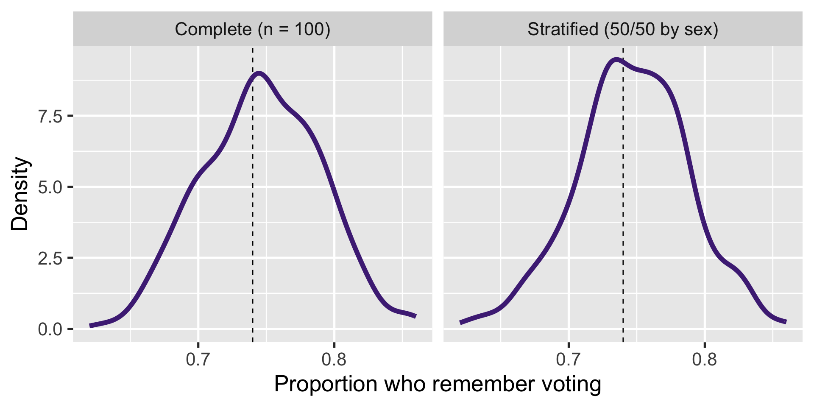
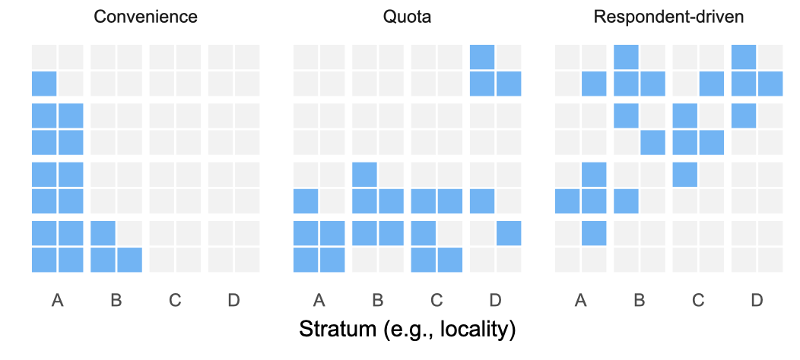

# A tibble: 3,799 × 4
vote sex hispanic college
<chr> <chr> <chr> <chr>
1 yes woman no yes
2 yes man no yes
3 yes woman no no
4 yes woman no yes
5 yes man no no
6 yes man no no
7 no woman yes no
8 yes man yes yes
9 yes woman no no
10 yes woman no no
11 yes woman no no
12 yes woman yes yes
13 yes woman no no
14 yes woman no no
15 yes woman no no
16 yes man yes no
17 yes woman yes no
18 yes woman no yes
19 no woman yes no
20 yes woman yes no
21 no woman yes no
22 yes man no yes
23 yes woman no yes
24 yes man no no
25 yes woman no no
26 yes man yes no
27 yes woman no no
28 yes man yes yes
29 yes woman no no
30 yes man yes no
31 yes woman no no
32 yes woman no yes
33 yes woman no no
34 yes man no yes
35 no man no yes
36 yes man no no
37 yes woman no yes
38 yes man no no
39 yes woman no yes
40 no woman no yes
41 yes man no yes
42 no woman yes no
43 yes woman no yes
44 no woman no no
45 yes man no yes
46 yes man no yes
47 yes woman no no
48 yes woman no yes
49 no man no yes
50 yes woman no yes
51 yes man no no
52 no man no no
53 no woman no no
54 yes woman no no
55 yes woman yes no
56 no woman yes no
57 yes woman yes no
58 no woman yes no
59 yes woman yes no
60 no woman yes no
61 yes woman yes no
62 yes woman yes yes
63 no woman yes no
64 yes woman no yes
65 yes woman no no
66 no man no no
67 no man yes no
68 yes woman no yes
69 yes woman no no
70 yes woman no yes
71 yes man no no
72 yes woman no no
73 yes woman no yes
74 yes woman yes no
75 yes woman no yes
76 yes woman no yes
77 yes woman no no
78 yes man no yes
79 no woman no no
80 yes man no yes
81 yes man no yes
82 yes man no no
83 yes man no yes
84 yes man no yes
85 yes man no yes
86 yes woman no yes
87 yes woman no no
88 yes man no no
89 yes woman yes yes
90 yes man no yes
91 yes woman no yes
92 yes woman no no
93 yes man yes yes
94 no man no yes
95 yes woman no yes
96 no man no yes
97 yes woman no yes
98 yes woman yes yes
99 yes man no yes
100 yes man no yes
101 yes man no yes
102 yes man no yes
103 yes man no yes
104 yes woman no no
105 yes woman no no
106 yes man no no
107 no man yes no
108 yes man no yes
109 yes man no yes
110 no man no no
111 no man yes no
112 no man yes no
113 no woman no no
114 no man no no
115 yes man no no
116 yes woman no yes
117 yes woman yes no
118 yes woman yes no
119 no man no yes
120 yes woman no no
121 yes man yes no
122 yes man yes yes
123 yes woman no yes
124 no man yes yes
125 no man yes yes
126 yes man no yes
127 yes man no no
128 no woman yes no
129 no woman yes no
130 yes woman no yes
131 yes woman yes no
132 yes woman no yes
133 yes woman yes yes
134 yes man no yes
135 yes man no yes
136 yes man no no
137 yes woman no yes
138 yes woman no yes
139 yes man no yes
140 yes woman yes no
141 no man yes no
142 yes man no yes
143 no woman no no
144 yes man no no
145 no woman no yes
146 yes woman no no
147 yes man no yes
148 yes man no yes
149 no man no yes
150 yes man no yes
151 yes woman no yes
152 no woman no no
153 yes woman no yes
154 yes woman no yes
155 yes woman no no
156 yes man no no
157 yes man no yes
158 no man no yes
159 yes woman no yes
160 yes man no no
161 yes woman no yes
162 yes woman yes yes
163 yes woman no yes
164 no woman no yes
165 no woman no no
166 yes woman no no
167 yes woman no no
168 yes woman no yes
169 yes man yes yes
170 yes man no no
171 no woman yes yes
172 yes woman no yes
173 yes man no no
174 yes man no yes
175 yes woman no no
176 no man yes yes
177 yes man no yes
178 yes woman no yes
179 yes man no yes
180 yes man no yes
181 yes man yes no
182 yes man no yes
183 yes woman no yes
184 yes man no yes
185 yes man no yes
186 yes woman no no
187 no man no yes
188 yes man yes yes
189 yes woman no yes
190 yes man no yes
191 yes man yes no
192 yes woman no yes
193 yes man no yes
194 no woman yes no
195 yes woman yes yes
196 no man no no
197 yes man yes yes
198 no woman yes no
199 yes man yes yes
200 yes woman yes no
201 yes man no no
202 yes woman no yes
203 no man yes no
204 yes man yes no
205 no man no yes
206 yes man no no
207 yes woman no no
208 yes woman no yes
209 yes woman yes no
210 yes man yes no
211 yes woman no yes
212 yes woman no yes
213 yes woman yes yes
214 yes man yes yes
215 yes man yes no
216 yes man no yes
217 yes man no no
218 yes woman no yes
219 yes man yes no
220 yes woman no yes
221 yes woman no yes
222 yes woman yes yes
223 yes man yes no
224 no man yes no
225 yes woman no yes
226 yes woman no no
227 yes man no yes
228 yes woman yes yes
229 no man yes no
230 yes man yes yes
231 no woman yes no
232 no man yes no
233 no woman yes no
234 yes woman yes no
235 yes woman no yes
236 yes man yes no
237 yes woman yes no
238 no man yes yes
239 yes woman yes no
240 yes woman no no
241 yes woman no yes
242 yes man no yes
243 no woman no no
244 yes woman no no
245 no man no no
246 yes woman no yes
247 yes woman no yes
248 no man no no
249 yes woman no yes
250 yes woman no yes
251 no man no no
252 yes man no yes
253 yes man no yes
254 yes woman no yes
255 yes woman no yes
256 yes man no no
257 yes man no yes
258 no woman yes no
259 yes man no yes
260 yes man no no
261 yes man yes no
262 no woman no yes
263 no woman no yes
264 yes woman yes yes
265 no woman yes no
266 yes woman no yes
267 yes man yes yes
268 yes woman yes yes
269 yes woman no no
270 yes woman no yes
271 no woman no no
272 yes woman no no
273 yes woman no no
274 yes woman yes yes
275 yes man no no
276 yes man no yes
277 yes woman no no
278 no woman no no
279 yes woman no yes
280 yes man no yes
281 yes woman no no
282 yes woman no yes
283 yes man yes yes
284 yes woman no yes
285 no man yes no
286 yes woman no no
287 yes woman no no
288 yes man yes no
289 yes woman no no
290 yes man no yes
291 no man yes no
292 yes woman yes no
293 no woman yes yes
294 yes man no yes
295 yes man no yes
296 yes man no no
297 yes man yes no
298 yes man no no
299 yes man no yes
300 yes man no no
301 no man no no
302 yes woman no no
303 no man no no
304 yes woman yes yes
305 yes woman no yes
306 no woman yes yes
307 yes man no yes
308 no man yes no
309 no woman yes no
310 no woman yes no
311 yes woman no no
312 yes woman no no
313 yes man no yes
314 yes man yes no
315 yes woman yes no
316 yes woman yes yes
317 yes man yes yes
318 yes man yes no
319 yes man no no
320 no man no no
321 yes man yes no
322 yes man yes no
323 yes man yes no
324 no woman yes no
325 yes man yes no
326 yes woman no yes
327 yes man no no
328 no woman no no
329 no man no no
330 yes woman no yes
331 yes man no yes
332 yes woman no yes
333 yes woman no yes
334 yes woman no yes
335 yes man no no
336 yes woman no yes
337 yes man no no
338 yes woman no no
339 yes man no no
340 yes man no no
341 yes man no yes
342 yes man no yes
343 no man no no
344 no man no yes
345 yes man no yes
346 yes woman no no
347 yes woman no no
348 no man no no
349 yes man yes yes
350 yes man no yes
351 yes man no yes
352 yes woman no yes
353 yes woman no yes
354 yes man no no
355 yes man no yes
356 yes man no no
357 yes man no yes
358 yes woman no yes
359 no woman no yes
360 yes woman no no
361 yes woman no no
362 yes man no yes
363 yes woman yes no
364 no man yes yes
365 yes woman no no
366 yes woman yes no
367 yes man no yes
368 yes man yes yes
369 no man yes no
370 yes man yes no
371 yes man no no
372 no man yes no
373 no man yes no
374 no woman no no
375 no man no no
376 yes woman no no
377 no man yes no
378 yes woman no no
379 yes woman no yes
380 yes woman no yes
381 yes woman no yes
382 yes man yes yes
383 yes woman no no
384 yes man no no
385 no woman no yes
386 yes man no yes
387 yes man no yes
388 yes man no yes
389 yes woman no no
390 no man no no
391 yes man no no
392 yes man no no
393 yes woman no yes
394 yes man no no
395 yes woman yes yes
396 yes woman no yes
397 yes woman no yes
398 yes woman no yes
399 no man no no
400 yes woman no yes
401 yes woman no yes
402 yes woman no no
403 yes man no no
404 no man no no
405 no woman no no
406 yes man no yes
407 yes man yes no
408 yes man no yes
409 yes woman no no
410 no woman no no
411 yes woman no no
412 yes man no yes
413 yes man no yes
414 yes man no no
415 yes man no no
416 yes man no no
417 no man no yes
418 yes woman no no
419 yes woman no yes
420 yes woman no no
421 no man no yes
422 yes woman no yes
423 yes woman no yes
424 yes woman no no
425 yes woman no yes
426 yes woman no no
427 yes woman no yes
428 no woman no no
429 no man yes no
430 yes woman no no
431 yes man no yes
432 no woman no no
433 no woman no yes
434 yes woman no yes
435 yes woman no yes
436 yes man no no
437 yes woman no yes
438 yes woman no yes
439 yes woman no yes
440 no woman no yes
441 yes woman no no
442 yes woman no yes
443 yes woman no yes
444 yes man yes yes
445 no woman yes no
446 yes woman no yes
447 no woman no no
448 yes woman no yes
449 yes man no yes
450 yes man yes no
451 yes woman no yes
452 yes woman no no
453 yes man no yes
454 yes man no yes
455 yes man no yes
456 no man no no
457 no woman no no
458 no man yes no
459 no man yes no
460 no woman no no
461 yes woman yes yes
462 yes woman no yes
463 yes man no yes
464 no woman no no
465 no man no no
466 yes man no yes
467 yes woman no yes
468 yes man yes yes
469 yes man no yes
470 yes man no no
471 yes man no yes
472 yes woman no yes
473 yes woman no no
474 yes man no yes
475 yes woman no yes
476 yes man no no
477 no woman yes no
478 yes man no yes
479 no woman no yes
480 yes woman no yes
481 no man no no
482 yes woman no yes
483 yes woman no yes
484 no woman no no
485 yes woman no no
486 yes woman no yes
487 yes woman yes no
488 yes man no yes
489 yes woman no yes
490 no man no no
491 yes woman no no
492 yes man no no
493 yes woman no yes
494 yes man no yes
495 yes man no no
496 yes woman no no
497 yes man no yes
498 yes man yes no
499 no man yes no
500 no woman yes no
501 yes man yes yes
502 yes woman no yes
503 no woman no yes
504 yes man no yes
505 yes man no yes
506 no woman no no
507 yes man no no
508 yes woman no no
509 yes woman no no
510 yes woman no no
511 no woman no yes
512 yes man no yes
513 no woman yes yes
514 yes man no yes
515 yes woman no no
516 yes woman yes yes
517 yes woman yes yes
518 yes man no yes
519 yes man no yes
520 yes woman yes yes
521 yes man no yes
522 yes man no yes
523 yes woman no yes
524 no man no yes
525 yes man no no
526 yes woman no yes
527 yes man no yes
528 no man no no
529 yes man no yes
530 yes woman no yes
531 yes woman no no
532 yes man no no
533 yes woman no yes
534 yes man no no
535 yes woman no yes
536 yes man no yes
537 yes woman no yes
538 yes woman no yes
539 yes woman no yes
540 yes man no yes
541 yes man no yes
542 yes woman no yes
543 no man no no
544 yes man no yes
545 yes man no yes
546 yes woman no yes
547 yes woman no yes
548 yes man no yes
549 yes woman no yes
550 yes woman no yes
551 yes man no yes
552 yes man no yes
553 no man no yes
554 no man no yes
555 yes man yes yes
556 no man no yes
557 yes woman no no
558 no woman no no
559 yes woman no no
560 yes man no yes
561 yes woman no yes
562 yes woman no no
563 yes woman yes yes
564 no woman no yes
565 yes woman no yes
566 yes woman no yes
567 yes woman no no
568 yes man no no
569 yes man no yes
570 yes man no no
571 yes woman no yes
572 yes man no no
573 yes woman no yes
574 yes woman no yes
575 yes man no no
576 no woman yes no
577 yes woman no no
578 no woman yes no
579 yes man no no
580 no woman yes no
581 yes man no no
582 no man no yes
583 yes woman no yes
584 yes man no no
585 no woman no yes
586 yes man no yes
587 yes woman yes yes
588 yes woman no yes
589 yes man no yes
590 yes man no no
591 yes man no yes
592 yes woman no no
593 yes man no yes
594 yes woman no yes
595 yes man no yes
596 yes man no no
597 yes woman no yes
598 yes woman no yes
599 yes woman no no
600 yes man no no
601 yes woman no yes
602 no woman no yes
603 yes woman no yes
604 yes man no yes
605 yes woman no yes
606 yes woman no yes
607 yes woman no no
608 yes woman no yes
609 no man no yes
610 yes man no yes
611 yes man no yes
612 yes woman yes yes
613 yes man no yes
614 yes woman yes yes
615 yes woman no yes
616 yes woman no no
617 yes man no yes
618 yes woman yes yes
619 yes woman no yes
620 no man no yes
621 yes woman no yes
622 yes woman no yes
623 yes woman yes yes
624 no woman no yes
625 yes woman no yes
626 yes man no yes
627 yes woman yes no
628 yes woman no no
629 no man yes no
630 no man yes no
631 yes man no no
632 no man no no
633 yes woman no yes
634 yes man no yes
635 yes woman no yes
636 yes man yes no
637 no man no yes
638 no woman no no
639 yes woman no yes
640 yes man no yes
641 yes woman no no
642 yes woman no no
643 no man no yes
644 yes woman no yes
645 yes man no yes
646 yes woman yes yes
647 yes woman no yes
648 yes man no no
649 yes man yes no
650 yes woman no no
651 yes woman no no
652 yes man no no
653 yes woman yes no
654 yes woman no no
655 yes man no yes
656 yes woman no yes
657 yes woman no yes
658 yes woman no no
659 yes woman no yes
660 yes woman no no
661 yes woman no no
662 yes man no no
663 yes woman no no
664 yes man no yes
665 yes woman no yes
666 yes man no yes
667 yes man no yes
668 yes woman no no
669 yes woman no yes
670 yes man no no
671 yes woman no yes
672 no man yes yes
673 yes woman yes yes
674 yes woman no yes
675 yes man no no
676 no woman no no
677 yes man no no
678 yes man no yes
679 yes man no yes
680 yes woman no no
681 no woman no no
682 yes woman yes yes
683 yes woman no no
684 yes woman no yes
685 yes woman no no
686 no man no no
687 yes man no yes
688 yes woman no no
689 yes man no yes
690 yes woman no yes
691 yes woman no yes
692 yes woman no no
693 yes woman no yes
694 yes woman yes yes
695 yes woman no yes
696 yes woman no no
697 yes woman no no
698 yes woman no no
699 yes man yes yes
700 yes woman no no
701 yes woman no yes
702 no man no yes
703 no woman no yes
704 yes woman no no
705 no man no yes
706 yes man no yes
707 no man yes no
708 yes man no no
709 yes woman no yes
710 yes woman no yes
711 yes man no yes
712 yes woman no yes
713 yes woman yes no
714 yes woman no yes
715 yes man no yes
716 yes man no yes
717 yes woman no yes
718 yes woman no yes
719 yes woman no no
720 yes man no no
721 yes man yes no
722 yes man no yes
723 yes man yes no
724 yes man no yes
725 yes man no yes
726 yes man no yes
727 yes woman no yes
728 no woman no yes
729 yes woman no no
730 no woman no yes
731 yes woman no yes
732 yes woman yes yes
733 yes man no yes
734 yes man no yes
735 yes man no yes
736 yes woman no yes
737 no man no no
738 yes man no no
739 yes man no no
740 yes woman no no
741 yes woman no yes
742 yes man no yes
743 no woman no no
744 no man no no
745 yes man no yes
746 yes woman no yes
747 yes woman yes no
748 yes man no yes
749 no woman no no
750 yes man no no
751 yes woman no no
752 yes woman no no
753 yes woman yes no
754 no woman no no
755 yes woman no yes
756 yes man no no
757 yes woman no no
758 no woman no yes
759 yes woman no no
760 no woman yes no
761 yes woman no yes
762 no woman yes no
763 yes man no no
764 yes man no no
765 yes woman yes yes
766 no man no no
767 yes man no yes
768 yes woman no no
769 yes woman no no
770 no man no no
771 yes woman no no
772 yes woman no no
773 no man no no
774 yes man no no
775 yes man no yes
776 yes woman no yes
777 yes woman no no
778 yes woman no no
779 no man no yes
780 yes man no yes
781 yes man no no
782 yes woman no yes
783 yes man no yes
784 yes woman no yes
785 yes man no yes
786 yes man no no
787 no man no no
788 yes man no yes
789 yes woman no no
790 yes woman no no
791 no man no no
792 yes woman no no
793 yes man no yes
794 no woman no yes
795 yes man no no
796 yes woman no yes
797 no woman no yes
798 yes man no yes
799 yes woman no yes
800 yes woman no no
801 yes man no yes
802 yes man no yes
803 yes man no yes
804 yes woman no yes
805 yes man no yes
806 yes woman no no
807 no woman yes no
808 yes man no yes
809 yes man no yes
810 yes woman no yes
811 no woman no yes
812 no man yes yes
813 yes woman no yes
814 yes woman yes no
815 yes man no yes
816 yes woman no yes
817 yes woman no no
818 yes man no yes
819 yes man no no
820 yes man no yes
821 yes woman no yes
822 yes man no yes
823 yes woman no yes
824 yes man no no
825 yes man no yes
826 yes woman yes yes
827 yes woman yes yes
828 yes woman no yes
829 yes woman no yes
830 yes woman no no
831 yes woman no no
832 yes man no yes
833 no man no no
834 yes woman no no
835 yes man no yes
836 yes woman no no
837 yes man no no
838 yes man yes yes
839 yes man no no
840 yes woman no yes
841 yes woman no no
842 yes man no no
843 yes woman no yes
844 yes man no no
845 no woman yes no
846 yes man yes yes
847 yes woman no no
848 no woman no no
849 yes man no no
850 no man yes no
851 yes woman no no
852 yes woman no yes
853 no woman no no
854 yes woman yes no
855 yes man no no
856 yes woman no yes
857 yes woman no no
858 yes man yes yes
859 no woman yes no
860 no man no no
861 no man no yes
862 no man no no
863 yes woman yes no
864 yes woman yes yes
865 yes woman yes no
866 no woman yes no
867 no man yes no
868 no woman yes no
869 no woman yes no
870 no woman yes no
871 no woman yes no
872 yes woman no yes
873 no man yes no
874 no woman yes yes
875 no woman no no
876 no man yes yes
877 yes man no yes
878 no man no no
879 no woman no yes
880 yes woman no yes
881 yes man yes no
882 yes man no no
883 yes woman no no
884 no man yes yes
885 no woman yes yes
886 yes man no yes
887 no woman no yes
888 yes woman no yes
889 yes man no yes
890 no woman no yes
891 no man yes no
892 yes woman no no
893 yes man yes no
894 yes man yes yes
895 no man no no
896 yes man yes yes
897 yes woman no no
898 yes woman no no
899 no woman no no
900 yes man no yes
901 yes man no no
902 no man no no
903 yes man no yes
904 no man yes no
905 yes woman yes no
906 no woman no yes
907 no man no yes
908 no woman no no
909 yes man no no
910 no woman no no
911 yes man no no
912 yes woman no no
913 yes woman no yes
914 yes woman no no
915 no man yes no
916 yes woman no no
917 yes woman no yes
918 yes woman no no
919 yes woman no yes
920 yes man yes no
921 yes woman no yes
922 yes woman no no
923 yes woman no no
924 yes man no no
925 yes man no no
926 yes woman no yes
927 yes man no yes
928 yes woman no no
929 yes woman no no
930 yes man yes yes
931 yes woman no yes
932 yes man no no
933 yes woman no yes
934 yes woman no no
935 yes man no yes
936 yes man no yes
937 yes man no no
938 yes man no yes
939 yes woman no no
940 yes woman no no
941 yes woman no yes
942 yes woman no yes
943 no man no no
944 yes woman no no
945 yes woman no no
946 yes man no yes
947 yes woman no no
948 no woman no no
949 no woman yes no
950 no woman yes no
951 yes man no no
952 yes woman no no
953 yes woman yes no
954 no woman no no
955 no man yes no
956 no woman no no
957 yes woman no no
958 yes man no no
959 yes woman no no
960 yes man no yes
961 no man no yes
962 yes woman no no
963 yes man yes yes
964 yes man no no
965 no woman yes no
966 yes woman yes no
967 no man yes no
968 yes man yes no
969 no woman yes no
970 no man yes no
971 yes man yes no
972 yes woman yes yes
973 yes woman yes no
974 yes woman no yes
975 yes woman yes no
976 yes man yes yes
977 no woman no no
978 yes man yes no
979 yes woman yes no
980 yes woman yes no
981 no woman yes no
982 yes woman no no
983 yes man yes yes
984 yes woman yes yes
985 yes woman yes yes
986 yes woman yes no
987 yes woman no yes
988 yes man yes yes
989 no man yes yes
990 yes man no yes
991 yes man no yes
992 no man yes no
993 no woman yes no
994 no woman yes no
995 yes woman no yes
996 yes man no yes
997 no man no no
998 no man no no
999 yes woman yes yes
1000 no woman yes no
1001 yes woman no yes
1002 yes man no no
1003 yes woman yes yes
1004 no man yes no
1005 yes woman no yes
1006 yes man no yes
1007 yes man no yes
1008 yes man no yes
1009 no man no yes
1010 yes woman no no
1011 yes woman no yes
1012 yes woman no yes
1013 no man no yes
1014 yes woman no yes
1015 yes woman no yes
1016 yes man no yes
1017 yes man no yes
1018 yes man no yes
1019 no woman no no
1020 yes man no no
1021 yes woman no yes
1022 yes woman no yes
1023 yes woman no yes
1024 yes man no no
1025 yes man no yes
1026 no woman no no
1027 yes woman no no
1028 no woman no no
1029 no man no no
1030 no woman no no
1031 yes woman no no
1032 yes woman no no
1033 yes woman no no
1034 no woman no yes
1035 yes man no yes
1036 yes man no yes
1037 yes man no yes
1038 yes man no yes
1039 yes woman no yes
1040 yes man no yes
1041 yes woman no yes
1042 yes man no yes
1043 yes woman no yes
1044 yes man no yes
1045 yes woman no yes
1046 yes woman no yes
1047 yes man no yes
1048 yes woman no no
1049 no man no no
1050 yes man no no
1051 yes woman no no
1052 yes man no no
1053 yes man no no
1054 no man no no
1055 no woman no no
1056 yes man no no
1057 no man no yes
1058 no man no no
1059 no woman no no
1060 yes woman no no
1061 no man no yes
1062 yes man no no
1063 yes man no yes
1064 yes man no no
1065 yes woman no no
1066 no man no no
1067 yes woman no no
1068 yes woman no no
1069 yes woman no no
1070 yes man yes no
1071 yes man no no
1072 yes woman yes yes
1073 yes woman no no
1074 yes man no no
1075 no man no yes
1076 yes woman no no
1077 yes man no no
1078 yes man no no
1079 no woman no no
1080 no man no no
1081 yes woman yes no
1082 no man no no
1083 yes woman no yes
1084 no man no no
1085 yes man no no
1086 yes man no yes
1087 no man no no
1088 yes woman no yes
1089 yes woman no yes
1090 no woman no no
1091 yes woman no no
1092 no man no no
1093 no man no no
1094 no woman no no
1095 yes woman no yes
1096 no woman no yes
1097 yes man no yes
1098 no man no no
1099 yes man no yes
1100 yes man no yes
1101 yes man yes yes
1102 no woman no yes
1103 yes woman no yes
1104 no woman no yes
1105 yes man no no
1106 yes woman no yes
1107 yes woman no yes
1108 no man no no
1109 yes woman no no
1110 yes man no no
1111 no man no yes
1112 no woman no no
1113 yes man no no
1114 yes woman no yes
1115 yes woman no yes
1116 no woman no no
1117 yes woman no yes
1118 no woman no yes
1119 no woman no no
1120 no man no no
1121 yes woman no no
1122 yes woman no yes
1123 yes woman no yes
1124 yes man no yes
1125 yes woman no no
1126 no woman no yes
1127 yes woman no yes
1128 yes man no yes
1129 yes woman no yes
1130 yes man no no
1131 yes woman no yes
1132 yes woman no yes
1133 yes woman yes yes
1134 yes woman yes yes
1135 no woman yes no
1136 yes woman no yes
1137 no woman no yes
1138 yes man yes no
1139 yes man no yes
1140 no man no no
1141 yes man yes no
1142 yes man yes no
1143 yes woman yes no
1144 yes man no no
1145 no man no no
1146 yes woman yes no
1147 yes woman no yes
1148 yes man no yes
1149 yes man yes yes
1150 yes woman yes yes
1151 no woman no no
1152 yes man no yes
1153 yes man yes no
1154 yes woman no yes
1155 no man no no
1156 yes woman yes no
1157 yes man no no
1158 no woman no no
1159 no woman yes no
1160 no man no no
1161 yes woman yes yes
1162 yes woman no no
1163 no man no no
1164 yes woman no yes
1165 yes man no yes
1166 no man no no
1167 no woman no no
1168 no man no no
1169 no woman yes no
1170 yes man no no
1171 no woman no yes
1172 yes man no yes
1173 yes man no no
1174 yes woman no yes
1175 yes man no no
1176 yes woman no yes
1177 yes man no no
1178 yes man no no
1179 yes woman no no
1180 yes woman yes no
1181 no woman no yes
1182 yes woman no no
1183 no man yes no
1184 yes woman no no
1185 no man yes no
1186 yes woman no yes
1187 yes woman no no
1188 yes woman no yes
1189 yes man no yes
1190 yes man no yes
1191 no man no no
1192 yes man no no
1193 yes woman no yes
1194 yes woman no no
1195 no woman yes no
1196 yes woman no no
1197 no woman no no
1198 yes woman no no
1199 yes woman no no
1200 yes man no yes
1201 no woman no no
1202 yes man no no
1203 no man no no
1204 yes man yes no
1205 yes woman yes no
1206 yes woman no yes
1207 yes woman no no
1208 yes woman no yes
1209 yes woman no yes
1210 yes woman no yes
1211 yes man no no
1212 yes woman no no
1213 yes man no yes
1214 yes man no yes
1215 yes man no yes
1216 yes woman no no
1217 yes man no yes
1218 yes woman no no
1219 yes man no yes
1220 yes woman no yes
1221 yes man no yes
1222 yes man no no
1223 yes woman no yes
1224 no woman no yes
1225 yes woman no yes
1226 yes woman no yes
1227 no woman no yes
1228 yes man no yes
1229 yes woman no yes
1230 yes man no yes
1231 yes woman no no
1232 yes man no no
1233 no woman no no
1234 yes man no no
1235 yes woman no no
1236 yes man no no
1237 yes man no yes
1238 yes man no no
1239 yes man no no
1240 no woman no no
1241 yes man no yes
1242 yes woman no no
1243 yes woman no yes
1244 no man no no
1245 yes woman no yes
1246 yes woman no yes
1247 yes man no yes
1248 no man no no
1249 no man yes no
1250 yes man no no
1251 yes man yes yes
1252 no woman yes no
1253 yes woman yes yes
1254 no woman yes no
1255 no woman yes yes
1256 yes woman no yes
1257 yes woman no no
1258 yes man no yes
1259 no man yes yes
1260 yes man yes no
1261 no woman no no
1262 yes man no no
1263 yes man no no
1264 yes man no yes
1265 no woman no no
1266 yes woman no yes
1267 yes woman yes yes
1268 no woman no no
1269 no man yes yes
1270 yes man no yes
1271 yes woman no no
1272 yes man yes no
1273 yes woman yes no
1274 no woman yes no
1275 yes woman no no
1276 yes man no no
1277 yes man no yes
1278 yes man no no
1279 yes man no no
1280 yes man no no
1281 no woman yes no
1282 yes man no yes
1283 yes woman no yes
1284 no man yes yes
1285 no man no yes
1286 yes man no yes
1287 yes man no no
1288 yes woman no yes
1289 yes man no yes
1290 no woman no no
1291 yes woman no no
1292 yes woman no no
1293 no man no yes
1294 no man no yes
1295 yes woman no yes
1296 yes man no yes
1297 yes woman no yes
1298 yes man no yes
1299 yes man no yes
1300 yes man no yes
1301 yes woman no yes
1302 no man no no
1303 yes man no yes
1304 yes woman no no
1305 yes man no yes
1306 no woman no yes
1307 no woman no no
1308 yes man no yes
1309 no woman no no
1310 yes woman no no
1311 yes woman no yes
1312 yes man no no
1313 yes woman no no
1314 no woman no no
1315 no woman no no
1316 yes woman no no
1317 yes woman no no
1318 yes man no yes
1319 yes man no no
1320 no woman no no
1321 yes woman no no
1322 yes man no yes
1323 yes woman no yes
1324 yes woman no yes
1325 yes man no no
1326 no man no no
1327 yes man no yes
1328 no man no no
1329 yes woman no no
1330 no man no no
1331 no woman no no
1332 yes woman no yes
1333 yes woman no yes
1334 yes woman no yes
1335 yes woman no no
1336 yes woman no yes
1337 yes woman no no
1338 yes man no no
1339 yes woman no no
1340 yes man no yes
1341 no woman no no
1342 yes man no no
1343 no woman yes no
1344 yes man no no
1345 yes woman no no
1346 yes woman no no
1347 yes woman no no
1348 yes man no no
1349 yes man no no
1350 no man no no
1351 yes man no no
1352 yes man yes no
1353 yes man no no
1354 yes woman no no
1355 yes man no no
1356 yes man no no
1357 yes man no yes
1358 yes woman no no
1359 yes man no no
1360 yes woman no yes
1361 yes woman no no
1362 yes man no yes
1363 yes man no yes
1364 yes man no no
1365 yes woman no no
1366 no woman no no
1367 yes man no no
1368 yes woman no yes
1369 yes man no no
1370 no woman no no
1371 yes man no no
1372 yes woman no yes
1373 yes man no yes
1374 no man no no
1375 yes man no yes
1376 yes woman no yes
1377 yes man no no
1378 yes man no yes
1379 yes woman no no
1380 yes man no no
1381 yes man no no
1382 yes woman no yes
1383 yes woman no yes
1384 no man no no
1385 yes man no no
1386 yes woman no yes
1387 yes woman yes yes
1388 yes man no yes
1389 yes woman no yes
1390 yes woman no yes
1391 yes woman no yes
1392 yes woman no yes
1393 yes woman no no
1394 yes woman no no
1395 no woman no yes
1396 yes man no yes
1397 no woman yes no
1398 no man yes no
1399 yes woman no no
1400 no woman yes no
1401 no man no no
1402 yes woman yes yes
1403 yes woman no no
1404 yes woman no no
1405 yes woman no yes
1406 yes man no yes
1407 no woman no no
1408 no man yes no
1409 yes woman no no
1410 yes man yes no
1411 no man yes yes
1412 yes woman no yes
1413 yes woman yes yes
1414 yes man yes no
1415 no man no no
1416 no man no no
1417 no woman no no
1418 yes man no no
1419 yes man no yes
1420 no woman yes yes
1421 yes woman no no
1422 yes woman no no
1423 no man no yes
1424 yes man no no
1425 yes woman no yes
1426 no woman no no
1427 yes man no no
1428 no man yes no
1429 yes woman no yes
1430 no woman yes yes
1431 yes woman no yes
1432 yes woman no no
1433 yes man no no
1434 yes man yes no
1435 yes woman no yes
1436 yes woman no yes
1437 yes man no yes
1438 yes woman yes yes
1439 yes man no no
1440 yes woman no yes
1441 no woman no no
1442 yes man no yes
1443 no man no yes
1444 yes man no no
1445 yes man no no
1446 yes woman no yes
1447 yes woman no yes
1448 yes man no yes
1449 yes man no no
1450 yes man no no
1451 yes woman yes no
1452 yes woman yes yes
1453 yes woman no no
1454 yes woman no yes
1455 yes man no yes
1456 yes woman no no
1457 yes man yes no
1458 no woman no no
1459 yes woman yes yes
1460 yes man no no
1461 no man yes yes
1462 no woman no no
1463 no woman no no
1464 yes woman no no
1465 yes man no no
1466 no man no yes
1467 yes woman no yes
1468 yes woman no no
1469 yes man yes no
1470 yes man no no
1471 yes man no yes
1472 yes woman no yes
1473 yes woman no no
1474 yes man no no
1475 yes man no no
1476 yes woman no yes
1477 no man yes yes
1478 yes man no no
1479 yes woman no yes
1480 yes woman no yes
1481 yes woman no yes
1482 yes woman no no
1483 yes man no yes
1484 yes woman no no
1485 yes woman no no
1486 no man no no
1487 yes man no no
1488 yes man no yes
1489 yes man no yes
1490 yes man no no
1491 yes woman no yes
1492 no man no no
1493 no man no no
1494 no woman no no
1495 yes man no no
1496 no woman no no
1497 no man no no
1498 no woman no no
1499 yes woman no yes
1500 yes woman no no
1501 yes man no no
1502 yes woman no yes
1503 yes man no no
1504 yes woman no yes
1505 yes man no no
1506 yes man no yes
1507 no woman no no
1508 yes woman no no
1509 yes woman yes no
1510 yes man no no
1511 yes man no yes
1512 yes woman no no
1513 yes woman no yes
1514 yes woman no yes
1515 yes man no yes
1516 yes man no yes
1517 no man yes no
1518 yes woman no yes
1519 yes man no no
1520 no man yes yes
1521 no man no yes
1522 no man no yes
1523 yes woman no no
1524 yes man no yes
1525 yes woman no yes
1526 yes woman no no
1527 yes woman yes no
1528 no man no no
1529 yes woman no yes
1530 yes woman no yes
1531 yes woman no yes
1532 yes woman no no
1533 yes man yes no
1534 yes woman no yes
1535 yes woman no yes
1536 yes man no no
1537 yes woman no no
1538 yes man no no
1539 no woman no no
1540 yes man no no
1541 yes woman no no
1542 yes man no no
1543 yes woman no no
1544 yes woman yes no
1545 yes woman no no
1546 no man no no
1547 no man no no
1548 no man no no
1549 no woman no no
1550 no man no no
1551 no man no no
1552 no woman no no
1553 no woman yes no
1554 no man yes no
1555 yes man no no
1556 no woman no no
1557 no man no no
1558 yes man no no
1559 yes woman no yes
1560 no woman yes yes
1561 yes man no no
1562 yes man no no
1563 yes woman no yes
1564 yes woman no no
1565 no man no no
1566 no man yes no
1567 yes woman no yes
1568 no man no no
1569 yes man no yes
1570 yes woman no yes
1571 no woman no no
1572 yes woman no no
1573 yes man no no
1574 no man no no
1575 yes man no yes
1576 no man yes yes
1577 yes woman yes yes
1578 no woman yes yes
1579 yes man no yes
1580 yes woman no no
1581 yes woman no yes
1582 yes woman no no
1583 yes man no yes
1584 no woman yes no
1585 yes woman yes no
1586 no man yes no
1587 no man no no
1588 no man no no
1589 yes woman yes no
1590 no woman yes no
1591 yes man yes yes
1592 yes man yes no
1593 no man yes no
1594 no woman yes no
1595 yes man yes yes
1596 no man yes no
1597 yes man no no
1598 yes man yes yes
1599 no woman yes yes
1600 no man yes no
1601 yes man yes no
1602 yes woman yes no
1603 no woman yes no
1604 yes woman no yes
1605 yes woman no no
1606 no man no no
1607 yes man no yes
1608 yes man no yes
1609 no woman no no
1610 yes woman no no
1611 yes woman no no
1612 yes woman yes yes
1613 yes woman no yes
1614 yes woman no no
1615 yes man no yes
1616 no man no yes
1617 yes woman no yes
1618 yes man no no
1619 no woman no yes
1620 yes man no yes
1621 yes woman no yes
1622 yes woman no yes
1623 yes woman no no
1624 yes woman no yes
1625 yes man no no
1626 no man no no
1627 yes man yes no
1628 yes man no no
1629 yes man no no
1630 yes man no no
1631 yes man no no
1632 no woman no no
1633 yes woman no no
1634 yes man no yes
1635 yes man no yes
1636 no woman no no
1637 yes man no no
1638 no woman no yes
1639 yes man no yes
1640 yes man no no
1641 yes woman no yes
1642 yes woman no no
1643 yes woman no yes
1644 yes man no yes
1645 yes man no yes
1646 yes man no no
1647 yes man no yes
1648 no man no no
1649 yes woman no no
1650 no woman no no
1651 yes woman no no
1652 yes woman no no
1653 yes woman no yes
1654 no woman no no
1655 yes woman no no
1656 yes man no yes
1657 yes man no no
1658 yes woman no no
1659 yes woman yes yes
1660 yes man no no
1661 no man no no
1662 no woman no no
1663 yes man no no
1664 yes woman no yes
1665 no man no yes
1666 yes woman yes no
1667 yes man no yes
1668 no man yes no
1669 no man yes yes
1670 yes man no no
1671 yes man no no
1672 no man no yes
1673 no man no no
1674 yes woman no no
1675 yes man no no
1676 yes man yes no
1677 yes man yes no
1678 yes man no yes
1679 no man no no
1680 yes woman no no
1681 yes man no no
1682 yes woman no yes
1683 yes man no no
1684 yes woman no no
1685 yes woman no no
1686 yes woman no no
1687 yes man no yes
1688 yes woman no yes
1689 yes man no no
1690 yes man no yes
1691 no woman no no
1692 yes woman no yes
1693 yes man no yes
1694 yes woman no no
1695 yes woman no yes
1696 yes woman no no
1697 no woman no yes
1698 yes man no yes
1699 no man no no
1700 yes man no no
1701 no man no no
1702 yes man no yes
1703 yes woman no no
1704 yes man no no
1705 yes man no no
1706 yes woman no no
1707 yes man no no
1708 yes woman no yes
1709 yes woman no yes
1710 yes man no no
1711 yes man no yes
1712 yes man no no
1713 yes woman yes no
1714 yes man no yes
1715 yes woman no yes
1716 yes man no no
1717 yes woman no no
1718 yes woman no yes
1719 yes woman no yes
1720 yes man no yes
1721 yes man no yes
1722 yes woman no no
1723 yes woman no yes
1724 yes man no yes
1725 yes woman no yes
1726 yes man no no
1727 yes woman no yes
1728 yes woman no no
1729 yes man no yes
1730 yes man no yes
1731 yes woman no no
1732 yes man no yes
1733 yes woman no no
1734 yes man no yes
1735 yes man no no
1736 yes man no yes
1737 yes woman no yes
1738 yes woman no yes
1739 yes woman no yes
1740 yes man no yes
1741 no man no no
1742 yes man no yes
1743 yes woman no yes
1744 yes man no yes
1745 yes woman no yes
1746 no man yes no
1747 yes man no yes
1748 no woman no no
1749 no man yes no
1750 no woman no no
1751 no woman yes no
1752 no man yes no
1753 no man no no
1754 yes man no no
1755 yes man no yes
1756 no man no yes
1757 no man no yes
1758 yes woman yes yes
1759 yes woman yes no
1760 no woman yes no
1761 no woman no no
1762 yes man no yes
1763 no man no no
1764 yes man no yes
1765 yes man no no
1766 yes man no yes
1767 yes woman no yes
1768 yes woman no yes
1769 yes man no no
1770 yes woman no yes
1771 yes man no yes
1772 yes woman no no
1773 no man no no
1774 yes man no yes
1775 yes man no yes
1776 no woman no no
1777 no man no no
1778 no man no no
1779 yes woman no yes
1780 no man no no
1781 yes woman no yes
1782 yes woman no yes
1783 no woman no no
1784 yes man no no
1785 no man no yes
1786 yes man no yes
1787 yes woman no yes
1788 yes man no yes
1789 yes woman no yes
1790 yes woman no no
1791 no man no no
1792 yes woman no yes
1793 yes woman no no
1794 yes man no yes
1795 yes woman no no
1796 yes woman no yes
1797 no man yes yes
1798 yes man no yes
1799 yes woman no yes
1800 yes man no yes
1801 yes woman no yes
1802 yes woman no yes
1803 yes man no no
1804 yes woman yes yes
1805 yes woman no yes
1806 yes woman yes yes
1807 yes woman no yes
1808 yes man no no
1809 yes woman no no
1810 no woman no no
1811 yes man no no
1812 no woman no yes
1813 yes man no no
1814 yes man no no
1815 no man yes no
1816 no woman no no
1817 yes woman no no
1818 yes woman yes no
1819 yes woman yes no
1820 yes woman no no
1821 yes man no no
1822 no man no yes
1823 no man no no
1824 yes woman yes no
1825 yes woman no yes
1826 yes man no no
1827 yes man yes yes
1828 yes man no no
1829 yes woman yes no
1830 yes woman no yes
1831 yes woman no no
1832 no woman no yes
1833 yes woman no no
1834 yes woman no yes
1835 yes man no yes
1836 yes man no yes
1837 yes man no yes
1838 yes man no yes
1839 yes woman no yes
1840 yes man no yes
1841 yes woman no yes
1842 no woman no no
1843 yes woman no yes
1844 no man no no
1845 no man no no
1846 no woman no no
1847 yes man no yes
1848 no woman no yes
1849 no woman no no
1850 yes woman no yes
1851 yes woman no yes
1852 yes woman no no
1853 yes man no no
1854 yes man no yes
1855 no woman no yes
1856 yes man no no
1857 yes man no no
1858 yes woman no yes
1859 yes woman yes yes
1860 yes woman no no
1861 yes man no yes
1862 yes woman no yes
1863 yes woman no no
1864 yes woman no yes
1865 yes woman no yes
1866 yes woman no yes
1867 yes man no yes
1868 yes man no yes
1869 yes man no yes
1870 no man no no
1871 yes man no no
1872 no man no yes
1873 no woman no no
1874 yes man no yes
1875 yes woman no yes
1876 yes woman no yes
1877 yes man no yes
1878 yes woman no yes
1879 yes woman no yes
1880 yes woman no yes
1881 yes woman no no
1882 yes man no yes
1883 yes woman no no
1884 yes woman no yes
1885 yes man no yes
1886 no woman no yes
1887 no man no no
1888 yes woman no no
1889 no woman no no
1890 yes woman no yes
1891 yes woman no yes
1892 no man no no
1893 no man no yes
1894 yes man no no
1895 yes woman no no
1896 yes man no yes
1897 yes woman no yes
1898 yes woman no no
1899 yes man no no
1900 yes man no yes
1901 yes woman no yes
1902 yes woman no no
1903 yes woman no yes
1904 yes woman no no
1905 yes man no yes
1906 yes woman no no
1907 yes man no no
1908 yes man no no
1909 yes woman no no
1910 no man no no
1911 yes man no yes
1912 no woman no no
1913 no woman no no
1914 yes man yes no
1915 no woman no no
1916 yes woman no yes
1917 no man no no
1918 yes man no yes
1919 yes woman yes no
1920 yes man no no
1921 yes man no no
1922 no man no no
1923 yes woman no no
1924 yes woman no no
1925 yes man no yes
1926 yes man no no
1927 yes woman no yes
1928 no woman no no
1929 no woman no no
1930 yes woman no no
1931 yes woman no no
1932 no man no no
1933 yes woman no yes
1934 yes woman no yes
1935 yes man no no
1936 yes woman no yes
1937 yes woman no no
1938 yes woman no no
1939 yes woman no yes
1940 no man no no
1941 yes woman no yes
1942 yes man no yes
1943 yes woman no yes
1944 yes man no no
1945 yes man no no
1946 no man no no
1947 yes man no yes
1948 yes woman no yes
1949 yes man no yes
1950 no woman no no
1951 yes woman no no
1952 yes woman no no
1953 yes woman no yes
1954 yes woman no no
1955 yes man no no
1956 yes man no yes
1957 yes woman no yes
1958 yes woman no yes
1959 yes man no no
1960 yes man no yes
1961 yes man no no
1962 yes man no yes
1963 yes man no yes
1964 yes man no no
1965 yes man no yes
1966 yes man no yes
1967 no man no no
1968 yes woman no yes
1969 yes woman no yes
1970 no man no no
1971 yes man no no
1972 yes man no no
1973 no man no no
1974 yes woman no yes
1975 yes man no no
1976 no woman no no
1977 yes man no no
1978 no woman no yes
1979 yes woman no no
1980 yes man no no
1981 no woman no no
1982 yes man no no
1983 yes woman no no
1984 yes man no no
1985 yes woman no no
1986 yes woman no no
1987 yes man no no
1988 yes woman no yes
1989 yes woman no yes
1990 yes woman no yes
1991 no woman no yes
1992 yes woman no no
1993 no man no no
1994 yes man no yes
1995 yes man no no
1996 yes woman no yes
1997 yes woman no yes
1998 yes man no yes
1999 no man no no
2000 yes woman no yes
2001 yes man no no
2002 yes man no no
2003 yes woman no yes
2004 yes man no yes
2005 yes woman no no
2006 no man no no
2007 no man no no
2008 no man no no
2009 no woman no no
2010 no woman no no
2011 yes woman no yes
2012 yes man no no
2013 yes woman no no
2014 yes woman no no
2015 yes man no no
2016 yes man no yes
2017 yes man no no
2018 yes man no yes
2019 yes woman no yes
2020 yes woman no yes
2021 yes woman no yes
2022 no man no no
2023 yes man no no
2024 no woman no no
2025 no man no no
2026 yes man no yes
2027 yes man no yes
2028 yes woman no yes
2029 yes man no yes
2030 no woman no yes
2031 yes man no yes
2032 no man no no
2033 yes man no no
2034 yes woman no no
2035 no woman no no
2036 yes woman no no
2037 yes woman no no
2038 yes man no no
2039 yes woman no yes
2040 yes woman no yes
2041 yes woman no yes
2042 yes woman no yes
2043 yes man no no
2044 yes woman no no
2045 no woman no yes
2046 yes man no yes
2047 no woman no no
2048 no woman no yes
2049 yes man no no
2050 yes man no yes
2051 no man no no
2052 yes woman no yes
2053 yes man no no
2054 no man no no
2055 no man no no
2056 no woman no no
2057 yes woman no no
2058 yes woman no no
2059 yes woman no no
2060 yes woman no no
2061 yes woman no no
2062 yes woman no yes
2063 yes man no no
2064 yes woman no yes
2065 yes woman no no
2066 yes woman no yes
2067 yes woman yes no
2068 yes man no no
2069 yes man no no
2070 yes man no no
2071 yes man no no
2072 yes man no no
2073 no man no no
2074 yes woman no no
2075 no woman no no
2076 yes man no no
2077 yes woman no no
2078 yes man no no
2079 yes woman no yes
2080 yes woman no yes
2081 yes woman no no
2082 yes woman no no
2083 yes woman yes no
2084 yes woman yes no
2085 yes woman no no
2086 yes man no no
2087 yes man no yes
2088 no woman yes no
2089 yes woman no no
2090 yes man no no
2091 yes woman no yes
2092 yes woman no no
2093 no woman no no
2094 yes woman yes no
2095 yes man no yes
2096 no man no no
2097 yes man yes no
2098 yes man no no
2099 no man no no
2100 yes woman no yes
2101 yes woman no yes
2102 no man no no
2103 yes woman no no
2104 yes man no no
2105 yes man no yes
2106 yes woman no yes
2107 no man no no
2108 no woman no no
2109 no woman no yes
2110 yes woman no yes
2111 yes man no no
2112 yes man no yes
2113 yes woman no yes
2114 yes woman no yes
2115 no woman no no
2116 yes man no no
2117 no woman yes no
2118 yes woman no yes
2119 no man yes yes
2120 no woman no no
2121 no woman no yes
2122 no man no no
2123 no man no no
2124 yes woman no no
2125 yes woman no yes
2126 yes woman no yes
2127 yes man no yes
2128 yes woman no no
2129 yes man no no
2130 yes woman no yes
2131 yes man no no
2132 yes woman no yes
2133 yes man no no
2134 yes woman no yes
2135 no man no no
2136 no man no no
2137 no woman no no
2138 yes man no no
2139 yes woman no no
2140 no woman no no
2141 yes man no no
2142 no woman no yes
2143 yes woman no yes
2144 no man yes no
2145 yes man no yes
2146 yes man no yes
2147 yes man no yes
2148 yes man no no
2149 no man no no
2150 yes woman no no
2151 yes woman no no
2152 yes woman no no
2153 yes woman no yes
2154 yes man no no
2155 yes man no yes
2156 yes woman no no
2157 yes man no no
2158 yes man no no
2159 no woman yes no
2160 no woman no no
2161 yes woman no no
2162 yes man no yes
2163 yes man yes yes
2164 yes woman no yes
2165 yes man no yes
2166 yes woman no no
2167 yes woman yes yes
2168 yes woman yes no
2169 no man yes no
2170 yes woman no no
2171 yes woman no yes
2172 no woman no no
2173 no man no no
2174 no woman no no
2175 yes woman no yes
2176 yes man no yes
2177 yes woman no yes
2178 yes woman no yes
2179 yes woman no no
2180 yes woman no no
2181 yes woman no yes
2182 yes woman no yes
2183 yes woman no no
2184 yes man no no
2185 no woman no yes
2186 no man no yes
2187 no woman no no
2188 yes man no no
2189 yes woman no yes
2190 yes woman no no
2191 yes man no yes
2192 yes woman no yes
2193 yes woman no yes
2194 yes man no yes
2195 yes man no yes
2196 yes man no yes
2197 yes man no yes
2198 no man yes no
2199 yes man no yes
2200 no man yes no
2201 yes woman no yes
2202 yes woman no yes
2203 yes man no no
2204 yes man yes no
2205 no woman no no
2206 yes woman no yes
2207 yes woman no yes
2208 yes woman no yes
2209 yes woman no no
2210 yes man no yes
2211 yes man no yes
2212 yes woman no no
2213 yes man no no
2214 yes man no yes
2215 yes woman yes no
2216 yes woman no yes
2217 yes woman yes no
2218 yes woman no no
2219 yes woman no no
2220 no woman no no
2221 no man no no
2222 yes woman no no
2223 yes woman no yes
2224 yes woman no yes
2225 yes woman yes yes
2226 yes woman no yes
2227 yes woman no no
2228 no woman no yes
2229 yes man no yes
2230 yes man no yes
2231 yes woman no no
2232 yes man no no
2233 yes woman yes yes
2234 no man no no
2235 yes woman no yes
2236 yes woman no no
2237 no woman no no
2238 yes man no no
2239 yes man no no
2240 yes man no no
2241 yes woman no no
2242 no man no no
2243 yes woman no no
2244 yes man no yes
2245 yes man no yes
2246 yes man no no
2247 yes woman no no
2248 yes man no yes
2249 yes woman no no
2250 yes woman no no
2251 yes woman no yes
2252 no woman no yes
2253 yes woman no yes
2254 yes woman no no
2255 no man no yes
2256 yes woman no yes
2257 no man no no
2258 no man no no
2259 yes woman no no
2260 yes man no yes
2261 yes woman no yes
2262 yes woman no yes
2263 yes woman no no
2264 yes man no yes
2265 yes woman no yes
2266 yes woman no no
2267 yes woman no no
2268 yes man no yes
2269 yes woman no no
2270 yes woman no no
2271 yes woman no no
2272 yes woman no no
2273 yes woman no no
2274 yes woman no no
2275 yes man no no
2276 yes woman no yes
2277 yes woman no no
2278 no man no no
2279 no woman no no
2280 yes woman no yes
2281 yes woman no yes
2282 no man no no
2283 yes man no yes
2284 yes man no yes
2285 no man no no
2286 no woman no no
2287 yes woman no no
2288 no man yes no
2289 no woman yes no
2290 yes man no no
2291 yes man no yes
2292 yes woman no no
2293 no man no no
2294 no man no no
2295 yes woman no yes
2296 yes man no no
2297 yes woman no no
2298 yes man no yes
2299 yes man no yes
2300 yes woman no yes
2301 yes woman no yes
2302 no woman yes no
2303 yes man no no
2304 no woman no no
2305 yes woman no no
2306 yes man no yes
2307 yes woman no no
2308 yes man no yes
2309 yes woman no no
2310 yes woman yes yes
2311 no woman no no
2312 yes woman no no
2313 yes woman no no
2314 no man no no
2315 yes man no no
2316 no woman no yes
2317 yes man no no
2318 yes woman no yes
2319 no man yes no
2320 no man no no
2321 no woman yes no
2322 no woman no no
2323 yes man no no
2324 yes woman no no
2325 yes woman no no
2326 yes man no no
2327 yes man no yes
2328 yes woman no yes
2329 yes woman no no
2330 no man no no
2331 yes woman no yes
2332 no woman no no
2333 yes man no yes
2334 yes man no no
2335 yes woman yes no
2336 yes man no yes
2337 yes woman no yes
2338 no woman no no
2339 yes man no no
2340 yes woman no yes
2341 no woman no yes
2342 yes woman no no
2343 yes man no no
2344 yes man no yes
2345 yes woman no no
2346 no man no no
2347 yes man no no
2348 no man no no
2349 yes man no no
2350 no woman no no
2351 yes woman no yes
2352 yes woman no no
2353 yes woman no no
2354 yes man no yes
2355 yes woman no no
2356 yes woman no no
2357 yes woman no yes
2358 yes man no no
2359 yes woman no yes
2360 yes woman no yes
2361 no woman no no
2362 yes woman no no
2363 yes woman no yes
2364 yes man no yes
2365 no woman no no
2366 yes man no no
2367 yes man no yes
2368 no man no yes
2369 no woman no no
2370 yes man no yes
2371 yes woman no yes
2372 no man no no
2373 no woman no no
2374 yes man no no
2375 yes woman no yes
2376 yes woman no no
2377 yes man no yes
2378 yes woman no yes
2379 yes woman no no
2380 yes man no no
2381 yes woman no yes
2382 yes man no no
2383 yes woman no yes
2384 yes woman no no
2385 yes man no yes
2386 yes man no yes
2387 yes woman no no
2388 no woman no yes
2389 yes man no no
2390 yes man no no
2391 no man no no
2392 no woman no no
2393 yes woman no yes
2394 yes man no no
2395 no man no no
2396 yes woman no yes
2397 yes woman no no
2398 yes woman no no
2399 yes man no yes
2400 yes woman no no
2401 yes man no no
2402 no woman no no
2403 yes man no no
2404 yes man no no
2405 no man no no
2406 yes woman no yes
2407 yes man no yes
2408 no woman no no
2409 no man no yes
2410 yes woman no no
2411 yes woman no no
2412 yes man no yes
2413 yes man no no
2414 yes woman yes no
2415 no man no no
2416 yes woman no no
2417 yes woman no no
2418 yes woman no no
2419 no woman no no
2420 no man yes no
2421 no woman no no
2422 no woman no no
2423 yes woman no yes
2424 yes woman no yes
2425 yes man no yes
2426 yes woman no yes
2427 yes woman no yes
2428 yes woman no yes
2429 yes woman yes no
2430 yes man no no
2431 yes man no yes
2432 yes woman no yes
2433 yes man no yes
2434 yes woman no yes
2435 yes man no yes
2436 yes man no no
2437 no man no no
2438 yes woman no no
2439 yes man no yes
2440 yes man no yes
2441 yes woman no yes
2442 yes woman no yes
2443 yes man no yes
2444 yes man no yes
2445 yes woman no no
2446 no man no no
2447 yes man no no
2448 yes woman no yes
2449 yes woman no yes
2450 yes woman no no
2451 yes man no yes
2452 yes man no yes
2453 yes woman no yes
2454 yes man no no
2455 yes woman no no
2456 yes woman no no
2457 no woman no no
2458 no woman no no
2459 yes man no yes
2460 yes woman no no
2461 yes woman no no
2462 no man no no
2463 no man no yes
2464 no woman no yes
2465 no man no no
2466 yes man no no
2467 yes man no yes
2468 yes man no no
2469 no woman no no
2470 yes man no no
2471 yes man no no
2472 yes man no yes
2473 yes man no no
2474 no woman no no
2475 yes man no no
2476 no man no no
2477 yes woman no no
2478 yes man no no
2479 yes man no no
2480 yes woman no no
2481 yes woman no no
2482 yes woman no yes
2483 yes woman no yes
2484 no woman no yes
2485 no man no no
2486 no woman no no
2487 no woman no no
2488 yes woman no yes
2489 yes man no yes
2490 yes woman no yes
2491 yes woman no no
2492 yes woman no no
2493 yes woman no no
2494 yes woman no no
2495 no woman no no
2496 no man yes no
2497 no man no no
2498 yes woman no no
2499 yes man no no
2500 no woman no no
2501 yes man no no
2502 no woman yes yes
2503 yes woman no no
2504 yes man no no
2505 yes woman no yes
2506 no woman no no
2507 yes man no yes
2508 yes man no no
2509 yes woman no yes
2510 yes woman no no
2511 yes woman no no
2512 yes man no no
2513 yes man no no
2514 yes woman no yes
2515 yes woman no no
2516 yes man no yes
2517 yes woman no no
2518 no woman yes no
2519 yes man no no
2520 yes woman no yes
2521 yes man no no
2522 yes woman no yes
2523 yes woman no yes
2524 yes woman no yes
2525 yes man no no
2526 yes man no no
2527 yes man no yes
2528 yes woman no no
2529 yes woman no yes
2530 yes man no no
2531 yes man no no
2532 no woman no no
2533 yes man no no
2534 yes man no no
2535 no woman no no
2536 yes woman no yes
2537 yes man no no
2538 yes man no yes
2539 yes man no no
2540 yes man no no
2541 yes woman no no
2542 yes woman no yes
2543 yes woman no no
2544 yes man no yes
2545 yes man no yes
2546 yes woman no yes
2547 no woman no no
2548 yes woman no no
2549 no woman no yes
2550 yes man no no
2551 no woman no yes
2552 yes woman no yes
2553 yes man no no
2554 yes man no no
2555 yes woman no yes
2556 no woman no no
2557 no woman no no
2558 yes woman no yes
2559 yes woman no yes
2560 no woman no yes
2561 yes woman no yes
2562 yes woman no yes
2563 yes woman no no
2564 yes man no no
2565 no man no no
2566 yes woman no no
2567 yes woman no no
2568 no man no no
2569 yes man no yes
2570 no man no no
2571 yes woman no yes
2572 yes woman no no
2573 yes woman no yes
2574 yes woman no yes
2575 yes man no yes
2576 yes woman no no
2577 yes man no yes
2578 yes man no no
2579 yes woman no yes
2580 yes woman no no
2581 yes man no no
2582 yes woman no yes
2583 yes woman no yes
2584 yes woman no yes
2585 yes man no yes
2586 no woman no no
2587 yes woman no no
2588 yes woman no no
2589 yes man no no
2590 yes man no no
2591 yes man no no
2592 yes woman no yes
2593 yes woman no no
2594 yes woman no yes
2595 yes man no no
2596 yes woman no no
2597 yes woman no yes
2598 yes man no yes
2599 yes woman no yes
2600 yes woman no yes
2601 yes man no no
2602 yes woman no no
2603 yes woman no no
2604 no woman yes no
2605 no woman no no
2606 yes man yes no
2607 yes woman no no
2608 no woman no no
2609 no man no no
2610 yes man no no
2611 yes woman no no
2612 yes man no yes
2613 yes man no yes
2614 yes man no no
2615 yes woman no no
2616 yes man no no
2617 yes man no yes
2618 yes woman no no
2619 no man no no
2620 no woman no no
2621 yes woman no yes
2622 yes man no yes
2623 no woman yes yes
2624 no woman yes no
2625 no man yes no
2626 yes man no no
2627 no woman yes no
2628 yes man no no
2629 no man no no
2630 no man no no
2631 no woman yes no
2632 yes woman no yes
2633 no woman yes no
2634 yes man no no
2635 no man yes no
2636 no man yes no
2637 yes man yes no
2638 no man yes no
2639 no woman yes no
2640 no woman yes no
2641 no man no no
2642 no woman yes no
2643 yes woman yes no
2644 no woman yes no
2645 yes man no yes
2646 no woman yes yes
2647 yes man no no
2648 yes woman yes no
2649 no woman yes no
2650 yes woman yes no
2651 yes woman yes no
2652 yes woman no no
2653 yes woman no no
2654 no woman yes no
2655 no man yes no
2656 no man yes yes
2657 yes woman no no
2658 yes woman no yes
2659 no woman yes no
2660 yes man yes yes
2661 no woman no no
2662 yes man yes yes
2663 yes woman no no
2664 yes man yes yes
2665 no man yes no
2666 yes woman yes yes
2667 no woman yes no
2668 yes woman no no
2669 no man yes no
2670 no woman yes no
2671 no woman no no
2672 yes woman no no
2673 no woman yes no
2674 yes man yes yes
2675 yes man no yes
2676 yes woman no yes
2677 yes woman yes yes
2678 yes man no yes
2679 yes woman no yes
2680 yes woman no no
2681 no woman no no
2682 yes woman no yes
2683 yes woman no yes
2684 yes woman no yes
2685 yes woman no no
2686 yes man yes yes
2687 no woman no no
2688 yes man no yes
2689 yes woman no yes
2690 yes woman yes no
2691 yes man no yes
2692 yes man no yes
2693 yes man no yes
2694 yes man no yes
2695 yes woman yes no
2696 yes man yes no
2697 no man no no
2698 yes man yes no
2699 no man no no
2700 yes man no no
2701 no man yes no
2702 no man yes no
2703 no man no yes
2704 yes man no no
2705 no woman yes no
2706 yes man no no
2707 yes man no no
2708 no woman no yes
2709 no woman no no
2710 yes woman yes yes
2711 yes woman yes no
2712 no man no no
2713 yes woman no yes
2714 yes woman no yes
2715 yes woman yes no
2716 yes woman yes no
2717 yes man yes no
2718 yes woman yes yes
2719 no woman no no
2720 yes man yes no
2721 yes woman no yes
2722 yes woman no no
2723 yes woman no yes
2724 yes man no no
2725 yes woman no yes
2726 yes woman yes yes
2727 yes woman no no
2728 yes woman yes yes
2729 yes man no yes
2730 yes man no yes
2731 yes woman no no
2732 yes woman no yes
2733 yes man yes no
2734 yes man no yes
2735 yes man no yes
2736 yes man no yes
2737 yes man no yes
2738 yes man no no
2739 yes man no yes
2740 no woman no yes
2741 yes man no yes
2742 no man yes no
2743 yes woman no yes
2744 yes man no yes
2745 yes woman no yes
2746 yes woman no yes
2747 yes man no yes
2748 no woman no no
2749 no woman no no
2750 yes woman yes yes
2751 yes man no no
2752 no man yes no
2753 no man no no
2754 yes woman no yes
2755 yes man no no
2756 yes man yes yes
2757 yes woman yes no
2758 yes man no no
2759 no man yes no
2760 no woman no no
2761 no woman yes no
2762 no man no no
2763 yes man no no
2764 no man yes no
2765 no man yes no
2766 yes man yes yes
2767 no woman no no
2768 no man no no
2769 yes man no no
2770 no man yes no
2771 no woman no yes
2772 no man yes no
2773 yes man yes yes
2774 no man yes no
2775 no man yes no
2776 yes woman no no
2777 yes man no no
2778 yes woman yes yes
2779 no woman no yes
2780 yes woman no no
2781 no woman yes no
2782 yes man no no
2783 yes woman no no
2784 yes woman yes yes
2785 no man yes no
2786 yes woman no no
2787 yes man no no
2788 no man no no
2789 yes woman yes yes
2790 yes woman no no
2791 no woman no no
2792 no woman no no
2793 no woman yes no
2794 no woman yes no
2795 yes man yes no
2796 yes woman yes yes
2797 no woman yes no
2798 no woman yes no
2799 no woman yes no
2800 yes woman yes no
2801 no man no no
2802 no woman yes no
2803 yes man no no
2804 yes woman no no
2805 yes man yes no
2806 yes man no no
2807 no woman yes yes
2808 no man no no
2809 yes man no no
2810 yes man yes no
2811 yes woman yes no
2812 yes man no no
2813 yes man no no
2814 yes woman no yes
2815 yes woman no no
2816 yes woman no no
2817 no man yes no
2818 no man no no
2819 yes man no yes
2820 yes man no no
2821 no woman no no
2822 yes man no no
2823 no man no no
2824 no woman no no
2825 yes man no yes
2826 yes man no yes
2827 no woman no no
2828 yes woman no no
2829 yes woman no yes
2830 yes man no yes
2831 yes man yes no
2832 yes woman no no
2833 yes man yes yes
2834 yes man no yes
2835 yes woman no no
2836 yes woman no yes
2837 yes man no no
2838 yes woman no no
2839 no woman no no
2840 yes man no yes
2841 yes woman no no
2842 no woman yes yes
2843 yes woman no yes
2844 yes man no no
2845 no man no no
2846 yes woman no no
2847 yes man no yes
2848 yes woman no yes
2849 yes woman no yes
2850 no woman no no
2851 yes man no no
2852 no woman no no
2853 yes man no no
2854 yes man no no
2855 yes man no yes
2856 yes woman no yes
2857 yes woman no yes
2858 yes man no yes
2859 yes woman no no
2860 yes woman no yes
2861 yes woman no no
2862 no woman no no
2863 yes woman yes no
2864 yes woman no no
2865 no woman no no
2866 yes woman no yes
2867 yes woman no yes
2868 yes woman no no
2869 yes woman yes yes
2870 yes man no yes
2871 yes woman no yes
2872 yes woman no yes
2873 yes man no yes
2874 yes woman no yes
2875 no woman no yes
2876 no man no no
2877 no man no yes
2878 no man no no
2879 yes woman no no
2880 yes woman yes no
2881 yes man no yes
2882 yes man no yes
2883 yes man no no
2884 yes man no no
2885 yes man no no
2886 yes man no no
2887 yes woman no no
2888 yes man no yes
2889 yes woman no no
2890 yes man no no
2891 yes man no yes
2892 yes woman no no
2893 yes woman no yes
2894 yes man no no
2895 yes woman no yes
2896 no man yes no
2897 yes man yes no
2898 yes woman no yes
2899 yes woman no no
2900 yes woman no no
2901 yes woman no yes
2902 no man yes yes
2903 no man no no
2904 no man no no
2905 no woman no no
2906 yes man yes no
2907 yes man no no
2908 yes woman no no
2909 yes man yes yes
2910 yes man no yes
2911 yes woman no no
2912 no woman no no
2913 yes man yes yes
2914 no man yes no
2915 no woman no yes
2916 yes woman no yes
2917 yes woman no no
2918 yes man no yes
2919 yes man yes no
2920 no woman no no
2921 no man no no
2922 yes woman no yes
2923 no man yes no
2924 no woman no no
2925 yes woman no no
2926 no man yes no
2927 yes woman no yes
2928 yes woman no no
2929 yes woman no yes
2930 yes man no yes
2931 yes man no yes
2932 yes woman yes no
2933 yes woman no yes
2934 yes man no no
2935 yes woman no yes
2936 no woman no no
2937 yes man no yes
2938 yes woman no no
2939 yes woman no no
2940 yes woman no yes
2941 yes woman no no
2942 yes man no yes
2943 yes woman no yes
2944 no woman yes no
2945 yes woman no yes
2946 yes man no no
2947 no man no yes
2948 yes man no yes
2949 yes woman no no
2950 no woman yes no
2951 yes man no yes
2952 yes man no yes
2953 no woman no no
2954 no man no no
2955 yes man no no
2956 yes man no yes
2957 yes man no no
2958 yes woman no yes
2959 yes man no yes
2960 yes man no no
2961 yes woman no no
2962 yes woman no no
2963 yes man no no
2964 yes woman no yes
2965 yes woman no yes
2966 yes woman no no
2967 no woman no yes
2968 yes man no no
2969 yes woman no yes
2970 yes woman no no
2971 yes woman no yes
2972 yes man no yes
2973 no man no no
2974 no woman no no
2975 no man no no
2976 no woman no no
2977 no woman no no
2978 yes woman no yes
2979 no woman no no
2980 no man no no
2981 yes man no yes
2982 yes man no no
2983 yes woman no no
2984 yes woman no yes
2985 no man no no
2986 yes woman no no
2987 no woman no no
2988 no man no no
2989 yes man no no
2990 yes woman no yes
2991 no woman no no
2992 yes woman yes no
2993 yes man no no
2994 yes man no no
2995 yes woman no no
2996 no woman no no
2997 yes man no no
2998 yes man no yes
2999 yes woman no no
3000 no man no no
3001 no man no no
3002 no man no no
3003 yes man no yes
3004 no woman no no
3005 yes man no yes
3006 yes woman no yes
3007 yes man no no
3008 yes man no no
3009 no man no no
3010 yes woman no no
3011 yes man no yes
3012 yes man no no
3013 yes man no no
3014 yes woman no yes
3015 yes woman no yes
3016 yes woman no yes
3017 yes woman no no
3018 yes man no yes
3019 yes man no no
3020 yes man no yes
3021 yes man no no
3022 no man no no
3023 yes man no yes
3024 yes woman no yes
3025 yes man no no
3026 yes woman no yes
3027 no woman no no
3028 no man no yes
3029 yes woman no no
3030 no woman no no
3031 yes woman no yes
3032 no man yes no
3033 yes woman no yes
3034 yes woman no no
3035 yes woman no no
3036 no woman no no
3037 yes man no yes
3038 yes woman no yes
3039 yes woman no yes
3040 yes woman no yes
3041 yes man no yes
3042 yes woman no yes
3043 yes woman no no
3044 yes woman no yes
3045 no man yes yes
3046 no man no no
3047 no woman no yes
3048 yes man no no
3049 yes man no no
3050 no man no no
3051 yes man no no
3052 no woman no no
3053 yes man no no
3054 no woman no no
3055 no woman no yes
3056 yes woman no no
3057 yes woman no yes
3058 no man no yes
3059 yes man no no
3060 yes man no yes
3061 yes woman no yes
3062 yes woman no no
3063 yes man no no
3064 yes man no no
3065 yes man no yes
3066 yes man no yes
3067 yes man no no
3068 no man no no
3069 yes woman no no
3070 yes woman no yes
3071 yes man no no
3072 yes man no yes
3073 yes man no no
3074 no man no yes
3075 yes woman no no
3076 yes man no no
3077 yes man no yes
3078 yes woman no yes
3079 yes woman no yes
3080 yes woman no no
3081 yes man no yes
3082 yes man no no
3083 no man no no
3084 yes man no no
3085 yes woman no no
3086 yes man no no
3087 yes man no no
3088 yes woman no yes
3089 yes woman no no
3090 yes man no yes
3091 yes man no no
3092 yes man no yes
3093 yes woman no yes
3094 yes man no no
3095 no woman no no
3096 yes man no no
3097 yes woman no no
3098 yes woman no yes
3099 yes woman no yes
3100 yes woman no yes
3101 yes woman no no
3102 yes woman no yes
3103 yes man no no
3104 yes woman no yes
3105 yes man no yes
3106 yes man no yes
3107 yes man no yes
3108 yes man no yes
3109 yes woman no yes
3110 no man no no
3111 yes man no yes
3112 yes man no no
3113 yes woman no yes
3114 yes woman no no
3115 no woman no no
3116 no woman no no
3117 no woman no no
3118 yes man no no
3119 yes man no no
3120 yes woman no yes
3121 no woman no no
3122 yes woman no no
3123 yes man no yes
3124 yes woman no yes
3125 yes man no yes
3126 yes woman no yes
3127 no woman no no
3128 yes woman no no
3129 yes woman no no
3130 yes woman no no
3131 yes man no no
3132 yes man no no
3133 no man no no
3134 yes woman no yes
3135 yes woman no yes
3136 yes woman no no
3137 yes man no no
3138 no woman no no
3139 yes woman no no
3140 no man yes no
3141 yes woman no yes
3142 yes woman no no
3143 yes woman no no
3144 no woman no no
3145 no woman no no
3146 no man no no
3147 yes woman no no
3148 yes man no yes
3149 yes man no no
3150 yes woman no yes
3151 yes woman no no
3152 yes woman no yes
3153 yes man no no
3154 no woman no no
3155 yes woman no no
3156 no woman no no
3157 yes man no no
3158 yes woman no no
3159 yes man no no
3160 no woman no no
3161 yes woman no no
3162 yes man no no
3163 yes man no no
3164 yes woman no yes
3165 no woman yes no
3166 yes man no no
3167 yes man no no
3168 yes woman no yes
3169 no woman no yes
3170 no man no no
3171 yes woman no no
3172 yes woman no no
3173 no man no no
3174 yes man no no
3175 no woman no no
3176 yes man no no
3177 yes woman no no
3178 yes woman no no
3179 no man no no
3180 no man no no
3181 yes woman no yes
3182 no woman no no
3183 yes woman no no
3184 yes man no no
3185 no woman no no
3186 no woman no no
3187 no woman no no
3188 no woman no yes
3189 no woman no no
3190 yes man no yes
3191 yes man no no
3192 no woman no no
3193 yes woman no no
3194 yes woman no no
3195 yes man no yes
3196 no man no no
3197 yes man no yes
3198 yes man no yes
3199 yes woman no yes
3200 yes man no yes
3201 no man no yes
3202 yes woman no no
3203 yes man no yes
3204 yes woman no no
3205 yes woman no no
3206 no woman no no
3207 no man no no
3208 yes man no yes
3209 yes man no no
3210 no woman no no
3211 no woman no no
3212 no man no no
3213 yes woman no yes
3214 yes woman no yes
3215 yes woman no yes
3216 yes man no yes
3217 yes man no no
3218 yes woman no no
3219 yes woman no no
3220 yes man no no
3221 no man no yes
3222 yes man no yes
3223 yes man no no
3224 yes woman no no
3225 no woman no yes
3226 yes man no yes
3227 yes man no yes
3228 yes woman no no
3229 yes woman no yes
3230 yes man no no
3231 yes man no yes
3232 yes woman no no
3233 no man no no
3234 no woman no no
3235 yes woman no no
3236 yes woman no no
3237 yes man no no
3238 yes woman no no
3239 yes woman no yes
3240 yes man no yes
3241 yes woman no yes
3242 yes man no yes
3243 no man no no
3244 yes man no no
3245 yes man no yes
3246 yes man no yes
3247 no man no no
3248 yes woman no no
3249 yes woman no no
3250 yes woman no yes
3251 yes man no yes
3252 yes woman no yes
3253 yes man no yes
3254 no man no yes
3255 yes man no no
3256 yes man no no
3257 yes man no yes
3258 yes man no no
3259 yes man yes no
3260 yes man no no
3261 yes man no yes
3262 yes man no no
3263 yes man no yes
3264 yes man no no
3265 no man no no
3266 yes man no no
3267 yes man no no
3268 yes man no no
3269 yes man no no
3270 yes man no no
3271 yes man no no
3272 no woman no no
3273 yes man no no
3274 yes man no no
3275 yes woman no no
3276 yes man no yes
3277 yes man no no
3278 yes man no no
3279 yes man no yes
3280 yes man no no
3281 yes man no yes
3282 yes man no no
3283 yes man no yes
3284 no man yes no
3285 no man no no
3286 yes woman no yes
3287 yes man no no
3288 yes man no no
3289 yes man no yes
3290 no man no no
3291 yes man yes no
3292 no man no no
3293 no man no no
3294 yes man no yes
3295 yes man yes yes
3296 no man no no
3297 yes man no yes
3298 yes man no no
3299 yes man no yes
3300 yes man no yes
3301 yes man no yes
3302 yes man no no
3303 yes man no no
3304 no man no no
3305 no man no no
3306 yes man no no
3307 no man no yes
3308 no woman no no
3309 yes man no yes
3310 yes man no no
3311 yes man no yes
3312 yes man no yes
3313 no man no no
3314 yes man no yes
3315 yes man no no
3316 yes man no no
3317 no man no yes
3318 yes man no no
3319 yes man yes yes
3320 yes man no no
3321 no man no yes
3322 yes man yes no
3323 yes man no no
3324 yes woman no no
3325 no man no yes
3326 yes man no no
3327 yes man no no
3328 yes man no no
3329 yes man no yes
3330 yes man no yes
3331 yes man no no
3332 yes man no no
3333 yes man no yes
3334 yes man no no
3335 yes man no yes
3336 yes woman no no
3337 yes woman no no
3338 yes woman no no
3339 yes woman yes no
3340 yes woman no yes
3341 no woman yes no
3342 no woman no yes
3343 yes woman no yes
3344 yes woman no no
3345 yes woman no no
3346 yes man no no
3347 yes woman no yes
3348 yes woman no yes
3349 yes woman no no
3350 yes woman no yes
3351 no woman no no
3352 yes woman no no
3353 yes woman no yes
3354 no woman no yes
3355 yes woman no yes
3356 yes woman no yes
3357 yes woman no yes
3358 yes woman no no
3359 yes woman no no
3360 yes woman no no
3361 yes woman no no
3362 yes woman no no
3363 yes woman no no
3364 no woman no no
3365 yes woman no yes
3366 yes woman no yes
3367 yes woman no no
3368 yes woman no yes
3369 yes woman no yes
3370 no woman no yes
3371 yes woman no yes
3372 yes woman no yes
3373 yes man no no
3374 yes woman no no
3375 yes woman no no
3376 yes woman no no
3377 yes woman no yes
3378 yes woman no yes
3379 yes woman no yes
3380 yes woman no no
3381 yes woman no no
3382 yes woman no yes
3383 yes woman no yes
3384 no woman no no
3385 yes woman no yes
3386 yes woman no no
3387 yes woman no yes
3388 yes woman no yes
3389 yes woman no no
3390 yes woman no no
3391 no woman no no
3392 yes woman no no
3393 no woman no no
3394 yes woman no no
3395 yes woman no no
3396 yes woman no no
3397 yes woman no no
3398 no woman no no
3399 yes woman no no
3400 yes woman no no
3401 yes woman no yes
3402 yes woman no yes
3403 no woman no no
3404 no woman no no
3405 yes woman no yes
3406 yes woman no yes
3407 yes woman no no
3408 yes woman no no
3409 yes woman no no
3410 yes woman no no
3411 no woman no no
3412 no man no yes
3413 yes woman no no
3414 no woman no no
3415 no woman no yes
3416 yes woman no no
3417 yes woman no no
3418 yes woman no no
3419 yes woman no no
3420 yes woman no yes
3421 yes woman no yes
3422 no woman yes no
3423 yes woman no no
3424 yes woman no no
3425 no woman no no
3426 no woman no yes
3427 yes woman no yes
3428 yes woman no no
3429 yes woman no yes
3430 yes woman no yes
3431 no woman no no
3432 yes woman no no
3433 yes woman no yes
3434 yes woman no yes
3435 no man yes yes
3436 no man yes no
3437 no man yes no
3438 yes man yes no
3439 yes man yes yes
3440 yes man yes yes
3441 yes man yes no
3442 yes man yes no
3443 yes man yes yes
3444 yes man yes no
3445 no man yes no
3446 yes man yes yes
3447 yes man no yes
3448 yes man yes yes
3449 yes man yes no
3450 no man yes yes
3451 yes man yes yes
3452 yes man yes no
3453 yes man yes yes
3454 no man yes no
3455 yes man yes no
3456 yes man yes no
3457 no man yes no
3458 yes man yes yes
3459 yes man yes yes
3460 yes man yes no
3461 yes man yes yes
3462 yes man yes yes
3463 no man yes yes
3464 yes man yes yes
3465 no man yes no
3466 yes man yes no
3467 yes man yes yes
3468 yes man yes no
3469 yes man yes no
3470 yes man yes no
3471 no man yes no
3472 no man yes yes
3473 no man yes yes
3474 yes man yes yes
3475 no man yes no
3476 no man yes no
3477 yes man yes no
3478 no man no yes
3479 yes man yes no
3480 yes man yes no
3481 yes man yes no
3482 no man yes no
3483 no man yes no
3484 yes woman yes no
3485 yes man yes no
3486 yes man no yes
3487 yes man yes no
3488 yes man yes no
3489 yes man yes no
3490 no man yes yes
3491 no man yes yes
3492 yes man no yes
3493 yes man yes no
3494 yes man no yes
3495 yes man yes no
3496 yes man yes no
3497 yes man yes yes
3498 yes man yes no
3499 no man yes no
3500 yes man yes yes
3501 yes man yes yes
3502 yes man yes no
3503 yes man no no
3504 no man yes no
3505 no man yes no
3506 yes man yes yes
3507 yes man no no
3508 yes man yes yes
3509 yes man yes no
3510 yes man yes yes
3511 no man no no
3512 yes man yes no
3513 yes man yes no
3514 yes man yes yes
3515 yes man yes no
3516 no man yes yes
3517 yes man yes no
3518 yes man yes no
3519 no man yes no
3520 no man yes no
3521 yes man yes no
3522 yes man yes yes
3523 yes man yes yes
3524 yes man yes yes
3525 no woman yes no
3526 no woman yes yes
3527 yes woman yes yes
3528 no woman no no
3529 no woman yes no
3530 yes woman no no
3531 no woman yes yes
3532 no woman yes yes
3533 yes woman yes no
3534 yes woman yes yes
3535 yes woman yes no
3536 yes woman yes no
3537 no woman yes no
3538 no woman yes no
3539 yes woman yes no
3540 yes woman yes no
3541 yes woman yes no
3542 yes woman yes no
3543 yes woman yes no
3544 yes woman yes no
3545 yes woman yes no
3546 yes woman yes no
3547 no woman yes yes
3548 yes woman yes yes
3549 yes woman yes no
3550 yes woman yes no
3551 no woman yes no
3552 yes man yes no
3553 yes woman no no
3554 yes woman yes yes
3555 no woman yes no
3556 yes woman yes yes
3557 yes woman yes no
3558 yes woman yes yes
3559 yes woman yes yes
3560 yes woman yes yes
3561 no woman yes yes
3562 yes woman no yes
3563 no woman yes no
3564 no woman yes no
3565 yes woman yes no
3566 yes woman yes yes
3567 yes woman yes no
3568 yes woman no no
3569 yes woman yes no
3570 yes woman yes no
3571 yes woman yes no
3572 yes woman yes no
3573 yes woman yes no
3574 yes woman yes yes
3575 yes woman yes no
3576 yes woman yes yes
3577 no woman yes no
3578 yes woman yes yes
3579 no woman yes no
3580 yes woman yes no
3581 no woman yes yes
3582 yes woman yes no
3583 no woman no no
3584 yes woman yes yes
3585 yes woman yes yes
3586 yes woman yes yes
3587 yes woman yes no
3588 no woman yes yes
3589 yes woman yes yes
3590 no woman yes no
3591 no woman yes no
3592 no woman yes no
3593 no woman yes no
3594 yes woman yes no
3595 yes woman yes no
3596 yes woman no no
3597 no woman yes no
3598 yes woman yes no
3599 yes woman yes no
3600 yes woman yes no
3601 no woman yes no
3602 yes woman yes no
3603 yes woman yes no
3604 no woman yes no
3605 no woman yes no
3606 yes woman yes yes
3607 yes woman yes no
3608 no woman yes no
3609 yes woman no yes
3610 no woman yes yes
3611 yes woman no no
3612 yes woman yes no
3613 no man no no
3614 yes woman no yes
3615 no woman yes no
3616 yes man no no
3617 no man no no
3618 yes man no yes
3619 no man no no
3620 yes man no yes
3621 yes man no yes
3622 yes man no no
3623 yes man no no
3624 yes man no yes
3625 yes man no yes
3626 no woman yes no
3627 yes man no yes
3628 yes man no yes
3629 yes man no yes
3630 yes man no yes
3631 yes man no yes
3632 yes man no no
3633 yes man no no
3634 yes man no yes
3635 yes man no yes
3636 yes man no no
3637 yes man no yes
3638 yes man no yes
3639 yes man no yes
3640 yes man no yes
3641 no man no yes
3642 yes woman no yes
3643 no man no yes
3644 yes man no yes
3645 no man no yes
3646 yes man no yes
3647 yes woman no yes
3648 yes man no yes
3649 yes man no yes
3650 no man no no
3651 yes man no no
3652 yes man no yes
3653 yes man no yes
3654 yes man no yes
3655 no man no yes
3656 no man no yes
3657 yes man no no
3658 no man no yes
3659 yes man no yes
3660 yes man no yes
3661 yes man no yes
3662 yes man no yes
3663 no man no yes
3664 yes man no yes
3665 yes man no no
3666 yes man no yes
3667 yes man no yes
3668 yes man no yes
3669 no man no yes
3670 yes man no no
3671 yes man no no
3672 no man no yes
3673 yes man no no
3674 yes man no no
3675 no man no yes
3676 yes man no yes
3677 yes man no no
3678 yes man no yes
3679 no man no yes
3680 no man no yes
3681 yes man no yes
3682 yes man no yes
3683 yes man no no
3684 yes man no no
3685 yes man no no
3686 no man no yes
3687 yes man no no
3688 yes man no yes
3689 yes man no yes
3690 no man no no
3691 yes man no no
3692 no man yes no
3693 yes man no yes
3694 yes man no yes
3695 no man no yes
3696 no man no yes
3697 no man no yes
3698 no man no no
3699 yes man no no
3700 yes man no yes
3701 yes man no no
3702 yes man no yes
3703 no man no no
3704 no man no yes
3705 no woman no yes
3706 no woman no yes
3707 yes woman no yes
3708 yes woman no yes
3709 yes woman no yes
3710 no woman no no
3711 yes woman no yes
3712 yes woman no yes
3713 yes woman no yes
3714 yes woman no no
3715 yes woman no yes
3716 no woman no no
3717 yes woman no yes
3718 no woman no no
3719 yes woman no no
3720 yes woman no yes
3721 yes woman no yes
3722 yes woman no yes
3723 yes woman no yes
3724 yes woman no yes
3725 yes woman no no
3726 yes woman no no
3727 no woman no yes
3728 no woman no yes
3729 yes woman no no
3730 no woman no yes
3731 yes woman no no
3732 yes woman no yes
3733 yes woman no no
3734 yes woman no no
3735 yes woman no yes
3736 yes woman no yes
3737 yes woman no yes
3738 yes woman no yes
3739 yes woman no yes
3740 yes woman no yes
3741 yes woman no yes
3742 no woman no no
3743 no woman no yes
3744 yes woman no yes
3745 yes woman no yes
3746 yes woman no yes
3747 yes woman no no
3748 no woman no yes
3749 no woman no yes
3750 yes woman no yes
3751 yes woman no yes
3752 yes woman no yes
3753 no woman no yes
3754 yes woman no yes
3755 yes woman no no
3756 no woman no yes
3757 yes woman no yes
3758 no woman no no
3759 no woman yes no
3760 no woman no yes
3761 no woman no no
3762 yes woman no no
3763 no woman no no
3764 no woman no yes
3765 yes woman no no
3766 yes woman no yes
3767 yes woman no yes
3768 no woman no yes
3769 yes woman no yes
3770 yes woman no yes
3771 yes woman no no
3772 yes woman yes no
3773 yes woman no yes
3774 yes woman no no
3775 yes woman no yes
3776 yes woman no yes
3777 no woman no yes
3778 yes woman no yes
3779 no woman no yes
3780 no woman no no
3781 no woman no yes
3782 yes woman no yes
3783 yes woman no yes
3784 yes woman no yes
3785 no woman no no
3786 yes woman no no
3787 yes woman no no
3788 yes woman no yes
3789 yes woman no yes
3790 no woman no yes
3791 yes woman no yes
3792 yes woman no yes
3793 yes woman no no
3794 yes woman no no
3795 yes man no yes
3796 yes woman no no
3797 yes woman no yes
3798 yes woman no yes
3799 yes woman no yes Surveys
POLI SCI 210
Introduction to Empirical Methods in Political Science
AI Prompts
Sampling: Mode, frame, size, procedure, oversampling
Independent, identically distributed (i.i.d. assumption in statistics)
Total survey error framework
How to ask good survey questions?
What happens if people lie in surveys?
What to do if people lie in surveys?
Indirect questioning techniques: Randomized response, list experiment, others not mentioned in lecture
Last week
Ingredients for statistical inference
Data summary (point estimate, test statistic)
Uncertainty quantification (confidence intervals, p-values)
Keep in mind: Statistical properties that enable inference (finite sample, asymptotic)
This week: Surveys
Survey research: Study of public opinion
Not really a method, more of a data collection tool
Tuesday: Sampling
Why random sampling?
Sources of error
Thursday: Survey design
Asking good questions
Asking sensitive questions

Public opinion
The study of self-reported attitudes and behaviors
Self-report: What people say
Attitude: What people think or feel
Behavior: What people do
Primarily among the general public
Increasingly on specific target populations
Goal: Mapping self-reports to actual attitudes and behaviors
Open question
Should political scientist care about attitudes on their own?
Do we only care about behaviors?
Challenge
There is a gap between self-reports and actual attitudes/behaviors
Two things get in the way:
Asking the right people
Asking the right questions
Challenge
There is a gap between self-reports and actual attitudes/behaviors
Two things get in the way:
Asking the right people
Asking the right questions
Key sampling decisions
Mode
Sampling frame
Sample size
Sampling procedure
Oversampling
Key sampling decisions
Mode
Sampling frame
Sample sizeSampling procedure
Oversampling
Survey mode
Face-to-face: Oldest, most common method in US national and cross-national surveys
Laboratory: Few people, more intricate tasks
Phone: Groundbreaking at the time, but less reliable nowadays
Internet: Online panels (CloudResearch Connect, Mturk, Prolific), social media ads, message app chains
National representative surveys usually combine many modes
ANES evaluation of survey modes
Sampling frame
List of all the elements within the population from which a sample is selected
Common sampling frames: Phone books, electoral rolls, employee databases, household directories
Ideal case: Danish Civil Registry
take: We neve really know what the target population is
Sampling procedure
Ideal case: Random sampling
Simple random sampling: All units have the same inclusion probability (\(\approx\) flipping a coin for each)
Complete random sampling: Exactly \(n\) out of \(N\) units are selected at random (\(\approx\) arrange in random order and then survey the first \(n\))
How are these different?
Why is random sampling important?
Informally: So that our sample is (in expectation) representative of the target population
Formally: To justify statistical inference via CLT
We need to assume that the observations in our sample are drawn from…
Independent
Why is random sampling important?
Informally: So that our sample is (in expectation) representative of the target population
Formally: To justify statistical inference via CLT
We need to assume that the observations in our sample are drawn from…
Independent and Identically
Why is random sampling important?
Informally: So that our sample is (in expectation) representative of the target population
Formally: To justify statistical inference via CLT
We need to assume that the observations in our sample are drawn from…
Independent and Identically Distributed
… data generation processes
This is known as the i.i.d assumption
i.i.d. implications
Each survey respondent has an internal, unobservable function that draws different survey responses with some probability
Independent: How I come up with answers does not affect how you come up with answers
Identically distributed:
Do not know how responses are drawn
Assume is the same process for everyone
i.i.d. implications
This is equivalent to assuming that individual units are sampled at random with replacement
i.i.d. implications
This is equivalent to assuming that individual units are sampled at random with replacement
But we can only do random sampling without replacement
\(\rightarrow\) A decent approximation if sample size is large enough
Important
Random sampling lets us justify the i.i.d. assumption, which in turn allows using the standard formula for confidence intervals and p-values.
Problems with random sampling?
It’s expensive and can go wrong!
Back to GSS data
\(\rightarrow\) Take this as a population and compare different sampling procedures
500 simulations
Variants of random sampling
Stratified random sampling: Complete random simpling within groups/strata
Cluster random sampling: Whole groups brought into sample together
Stratified cluster sampling: First make groups, then sample clusters within each groups
Multi-stage random sampling: First clusters, then units within clusters
What changes?
\(\rightarrow\) Less likely to get unlucky!
Non-random sampling
Convenience sampling: Easy, inexpensive access
Quota sampling: Search until target group count is met
Respondent-driven: Ask respondents for contacts

Sources of error
Return to measurement error

Many different forms of measurement error!
Total survey error framework
Summary
We conduct surveys to understand attitudes and behaviors
Gap between self-reports and actual attitudes behaviors opens the door for measurement error
Many sources of error (Mode, frame, procedure)
Random sampling important assumption to enable statistical inference
Surveys
POLI SCI 210
Introduction to Empirical Methods in Political Science
Last time
Gap between self-reports and actual attitudes/behaviors opens the door for measurement error
Tuesday: Sample design concerns
Today: Questionnaire design concerns
Asking good questions
Asking sensitive questions
Practice
More practice
Q: What is the most important thing to teach children to prepare them for life?
A: To think for themselves
- 61.5% multiple choice
- 4.6% open-ended
What makes a good survey question?
No definitive answer!
- We want some validity and reliability, but those are hard to gauge
- Consistency over time is good
Here are some vague principles
Literal vs. pragmatic meaning
What the words mean vs. what we think the question is asking
Follow the maxims of conversation:
Maxim of relation: Answers are relevant relative to context
Maxim of quantity: Answer are informative, but no more informative than required
Maxim of manner: Most obvious meaning should be the correct one
Maxim of quality: Not to say anything false or inaccurate
Try to approximate everyday language!
Open-ended vs. closed response
Q: What have you done today?
What to say if open-ended:
I went to class
I took a shower
I read the newspaper
I wrote to my representative
Open-ended vs. closed response
Q: What have you done today?
What to say if multiple choice:
I went to class
I took a shower
I read the newspaper
I wrote to my representative
Frequency scales
Q: How frequently have you felt really irritated?
What does really irritated mean?
Maybe look at the options:
Less than once a year
About twice per year
Every other month
About once a month
More than once a month
Reference periods
Q: How many times have you felt really irritated this year
vs.
Q: How many times have you felt really irritated last week?
Reference periods also convey meaning!
Rating scales
Q: How successful would you say you have been in life?
Scale 1
0 (Not at all successful) - 10 (extremely successful)
Scale 2
-5 (Not at all successful) - 5 (extremely succesful)
Rating scales
Q: How successful would you say you have been in life?
Scale 1 (13% between 0 and 5)
0 (Not at all successful) - 10 (extremely successful)
Scale 2 (34% between -5 and 0)
-5 (Not at all successful) - 5 (extremely succesful)
0 at the beginning is a minimum
0 in the middle is a baseline
Demand effects
Preamble 1
You will now be asked to consider some hypothetical (not real) online news items and to indicate which news item you would most prefer to read
Demand effects
Preamble 2
You will now be asked to consider some hypothetical (not real) online news items and to indicate which news item you would most prefer to read. The purpose of this exercise is so we can measure whether the news outlet offering an article influences how likely people are to read the article
Demand effects
Preamble 3
You will now be asked to consider some hypothetical (not real) online news items and to indicate which news item you would most prefer to read. The purpose of this exercise is so we can measure whether the news outlet offering an article influences how likely people are to read the article. We expect that people will be more likely to choose an article if the news source offering it is known to favor their preferred political party, since people tend to seek out information that is consistent with their personal views
Demand effects
- Respondents’ tendency to try use context clues to find the “right” answer
Small bits convey researcher’s epistemic interest
Affiliation
Description of study
Question-wording
Priming effects
Priming effects
Three question groups
Political interest (How often follow govt news)
Political knowledge (Texas politics)
News coverage evaluation (Excuse knowledge gaps)
Shuffle order, and compare frequency for each combination
Priming effects
Priming effects
Questions are affected by their placement in the survey flow
Preceding questions may influence how respondents interpret current question
What if…
The problem is not how to craft questions
But the questions themselves?
Some examples
Have you lied about having COVID symptoms?
Would you bribe a police officer to avoid a traffic ticket?
Have you had sex after drinking alcohol?
Have you been offered goods or favors for your vote?
Do you know anyone with links to a militant organization?
Would you oppose a black family moving next door?
Would you allow muslim immigrants to become citizens?
What do these have in common?
They are sensitive questions
We can only learn about them through surveys
Asking about them directly leads to misreporting
This kind of measurement error is called social desirability bias or sensitivity bias
How to reduce sensitivity bias?
Purposefully deviate from maxims of conversation
By adding noise to the question
Two approaches:
Distract from the sensitive attitude/behavior
Guarantee anonymity
Different techniques vary on how they combine the two
Broadly known as indirect questioning techniques
Randomized response
For this question, I want you to answer yes or no.
Randomized response
For this question, I want you to answer yes or no. But I want you to consider the number of your dice throw.
Randomized response
For this question, I want you to answer yes or no. But I want you to consider the number of your dice throw. If shows on the dice, tell me no.
Randomized response
For this question, I want you to answer yes or no. But I want you to consider the number of your dice throw. If shows on the dice, tell me no. If shows, tell me yes.
Randomized response
For this question, I want you to answer yes or no. But I want you to consider the number of your dice throw. If shows on the dice, tell me no. If shows, tell me yes. But if another number shows, tell me your own opinion about the question.
[TURN AWAY FROM RESPONDENT]
Now you throw the dice so that I cannot see what comes out.
Randomized response
For this question, I want you to answer yes or no. But I want you to consider the number of your dice throw. If shows on the dice, tell me no. If shows, tell me yes. But if another number shows, tell me your own opinion about the question.
[TURN AWAY FROM RESPONDENT]
Have you thrown the dice?
Randomized response
For this question, I want you to answer yes or no. But I want you to consider the number of your dice throw. If shows on the dice, tell me no. If shows, tell me yes. But if another number shows, tell me your own opinion about the question.
[TURN AWAY FROM RESPONDENT]
Have you picked it up?
Randomized response
For this question, I want you to answer yes or no. But I want you to consider the number of your dice throw. If shows on the dice, tell me no. If shows, tell me yes. But if another number shows, tell me your own opinion about the question.
Now, during the height of the conflict in 2007 and 2008 (in Afghanistan), did you know any militants, like a family member, a friend, or someone you talked to on a regular basis?
Please, before you answer, take note of the number you rolled on the dice.
How does it work?
We know that about \(1/6 \approx 0.17\) respondents said yes because they rolled a
So if \(30\%\) in total said yes
We have \(\widehat{Y} = 0.3 - 0.17 = 0.13\) as our population estimate
But we do not know who they are in our survey!
Assumptions
1. Honesty given protection
People respond honestly when guaranteed anonymity.
2. One-sided lying
Those who do not hold the sensitive trait never falsely claim to bear it.
- These cannot be verified with data!
List experiment
Now I am going to read you three things that make people angry or upset.
List experiment
Now I am going to read you three things that make people angry or upset. After I read all three, just tell me HOW MANY of them upset you.
List experiment
Now I am going to read you three things that make people angry or upset. After I read all three, just tell me HOW MANY of them upset you. I don’t want to know which ones, just HOW MANY.
Control group
- The federal government increasing the tax on gasoline
- Professional athletes getting million-dollar contracts
- Large corporations polluting the environment
List experiment
Now I am going to read you three things that make people angry or upset. After I read all three, just tell me HOW MANY of them upset you. I don’t want to know which ones, just HOW MANY.
Treatment group
- The federal government increasing the tax on gasoline
- Professional athletes getting million-dollar contracts
- Large corporations polluting the environment
- A black family moving next door
How does it work?
Respondents are randomly assigned to conditions
Differences in responses can only be attributed to the presence/absence of the sensitive item (more on this in next week)
So \(\widehat{Y} = \text{Mean(treatment)} - \text{Mean(control)}\) gives a population prevalence rate
But we do not know who they are in our survey!
Assumptions
1. No liars
Those who do not hold the sensitive item never falsely claim to bear it.
2. No design effects
Including the sensitive item does not change how participants respond to the baseline items
- These can only be evaluated indirectly
Other techniques
Variants of the randomized response and list experiment
Summary
Asking good survey questions is challenging!
Ideally, we want to follow the maxims of conversation
But often, getting precise answers means asking weird questions
Example: Techniques for sensitive questions